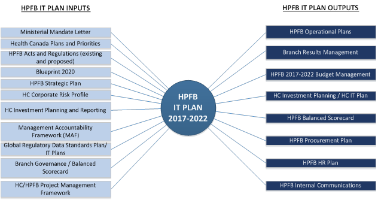

Health Products and Food Branch - IT Plan 2017-2018
Help on accessing alternative formats, such as Portable Document Format (PDF), Microsoft Word and PowerPoint (PPT) files, can be obtained in the alternate format help section.
 (PDF Version - 8.49 MB)
(PDF Version - 8.49 MB)
Contact: Health Canada
September 15, 2016
TABLE OF CONTENTS
- Overview
- Principles
- HPFB IT Plan Goals
- Goal 2: Enhancing Data Analytics Capacity
- Goal 3: Enhancing Regulatory Transparency and Openness
- Goal 4: Aging IT
- Goal 5: Preparing for The Future of Disruptive Technology
- Architectural Principles
- Business Architecture
- Information Architecture
- Meta Data Management
- ICH E2B Incident Case Safety Report (ICSR)
- ICH Common Technical Document (CTD)
- ICH electronic Common Technical Document (eCTD)
- HL7 Regulated Product Submission (RPS)
- ISO Identification of Medicinal Products (IDMP)
- HL7 Structured Product Labelling (SPL)
- IMDRF Unique Device Identifier (UDI)
- Core Steps for Health Canada
- Application Architecture
- Physical Architecture
Overview
The following 5-year IT Plan describes how the Health Products and Food Branch (HPFB) proposes to meet the information technology goals of the fiscal years 2017-18 through 2021-22. The plan includes HPFB’s proposed approach for enhancing business processes, data quality and consistency, supporting technologies, and IT operations in pursuit of an efficient, interconnected and adaptable organization with improved processes, structures and systems that support its programs to excel in meeting our objectives.
HPFB mandate is to take an integrated approach to managing the health-related risks and benefits of health products and food by:
- Minimizing health risk factors to Canadians, while maximizing the safety provided by the regulatory system for health products and food.
- Promoting conditions that enable Canadians to make healthy choices and providing information so that they can make informed decisions about their health.
HPFB uses information in this plan for resourcing and to implement the necessary IT changes to enable efficient and consistent adoption of the data standardization, technical architecture, and informatics changes. The plan considers assumptions, available resources, and legislative requirements of the e-Prescribing / Pan Canadian Drug Information System (PCDIS) (Accord) Transformation Initiative. The plan relies on the development and acceptance of regulatory data standards, and other global harmonization initiatives, such as the International Conference on Harmonization (ICH).
Vision
HPFB’s vision is that all Canadians achieve optimal health outcomes through access to safe, effective, high quality health products and food, and timely, relevant and useful health information. 1
To achieve this vision, IT investments must be aligned with HPFB’s program inventory and address all business needs pertaining to data, application, technical, security, and performance. As well, modernize HPFB’s regulatory activities across the entire product lifecycle and each product line.
HPFB IT Plan Context

Trends in Technology and Stakeholder Expectations
- Expectations of users for more services and faster delivery
- Growing need to support a variety of devices, applications and technologies including the ability to support
- users who bring their own devices
- Expectations for improved regulatory transparency and openness
- Ability for stakeholders to interact and communicate using multiple channels and easier ways
- Shift from on-site data storage and applications, to keeping information and applications on cloud
- technology
- Pervasiveness of multimedia and social media applications
- Greater concerns for identity management and privacy
- Increasing complexity of security and compliance
- The volume, complexity and availability of data
- Increasing use of mobile devices and other internet enabled devices that can network and communicate with each other
Key Investment Challenges
The Health Product and Food Branch recognizes that regulating health products continues to be a globalized business linking regulators, suppliers, patients, and consumers. As the Branch moves towards regulatory regime modernization between 2017-2021, 2017-18 becomes a crucial transition period setting the stage for realizing big data and globalization-driven architectural improvements that have been the principle investment focus since 2015.
In 2017-18, there are six key IT investment challenges facing HPFB
- Completion of ministerial requirements of the 2015-2018 blueprint (e.g. Healthy Eating);
- Provisioning of new Regulatory requirements required in FY 2017-18 (e.g. CETA);
- Establishing the groundwork for e-Prescribing / Pan Canadian Drug Information System (PCDIS) (Accord) Transformation;
- Enhancing and sustaining business operational activities;
- Continuing support for regulatory transparency and openness; and
- Mitigation of Aging IT risk.
Since the publication of the 2016-17 HPFB IM/IT framework strategy was published, the Branch has been faced with increasing challenges to health product regulation. Among the new challenges are three primary e-Prescribing / Pan Canadian Drug Information System (PCDIS) (Accord) Transformation provisions advancing the affordability and accessibility of prescription drugs: pharma workflow, e-prescribing, and pan-Canadian drug information. Over the next 5 years the e-Prescribing / Pan Canadian Drug Information System (PCDIS) (Accord) Transformation Initiative will form the cornerstone of policy, regulatory, and business transformation in the methodologies that Health Canada will use to manage therapeutic products (drugs and medical devices) into the 2020s.
At the same time, the Branch cannot lose sight of the business operational gains achieved, and provisioned for, in its transformation from a predominantly domestically-focused agency operating in a globalized economy, to a modern public health regulatory agency fully prepared to function well in a complex globalized regulatory environment. Structured information exchange, and the ability to effectively manage big data, is a critical component in extending regulatory reach with a view towards both increasing integrations amongst all industry partners and accelerating collaboration, work sharing, and transparency.
Governance and Oversight
HPFB has robust governance in place to ensure the alignment of IT investments with Health Canada commitments. Within the Branch, the Brach Executive Sub-Committee on Transforming, Transparency, Investment and Finance (BEC-TIFF) provides oversight of HPFB commitments and resource allocation in support of IT investment projects. BEC-TIFF recommends, evaluates, prioritizes, and controls the proposed IT investments decisions.
As part of the overall governance process, Resource Management & Operations Directorate (RMOD) monitors performance and risks associated with each IT investment and works closely with stakeholders to ensure these investments support Health Canada objectives, including reuse of common IM/IT business processes, shared best practices, and employment of common authoritative data sources.
Principles
This IT Plan builds upon earlier initiatives and compliments the Branch’s Regulatory Roadmap for Health Products and Food2 strategy to Canadians.
While aiming for comprehensive enablement of all regulatory activities for food and health products, emphasis will be placed upon IT investments that are practical, measurable, and achievable and deliver:
- clear value to Canadians and the health care and food safety systems; and
- the greatest efficiency by cutting through unsustainable information technology systems and replacing them with ones drawing upon international partnering, best practices and new technological advantages to contribute directly to the safety of food and health products.
The following six key strategic principles will guide HPFB’s information technology investment decisions.
Compliance with International Data Standards
Health Canada follows an open, consensus-based process to develop and maintain data standards. Open, consensus-based data standards are necessary to integrate, analyze, report, and share regulatory information. Health Canada’s standards development and maintenance program aligns with three principles:
- Ensure the use of high-quality data standards through the use of voluntary, consensus-based standards development processes in accredited standards development organizations (SDO) in place of government-unique standards unless such standards are inconsistent with law or otherwise impractical.
- Reduce the regulatory burden through alignment with existing health IT initiatives, laws, regulations, and mandates such as Executive Orders.
- Ensure the efficient use of data standards by adopting or adapting standards currently in use, where feasible.
HPFB collaborates with stakeholders (e.g., regulated industry, SDOs, academia, and medical-clinical societies, as well as other government agencies) to develop new and refine existing data standards. Health Canada is committed to the consistent use of data standards in regulatory submissions and plans to develop a set of metrics to assess their impact on the efficiency of the review process. Further, HPFB will develop a mechanism for the tracking and reporting of the number of submissions that comply and fail to comply with Health Canada-supported standards.
HPFB has promoted and encouraged the submission of data in standard, electronic formats thereby enabling efficient and effective process of reviewing drug marketing applications, safety reports, and other regulatory functions requiring data.
Use of Proven Enterprise Applications
HPFB plans to strengthen the use of “fit-for-purpose” support models for proven enterprise class applications, such as docubridge and ARISg (Canada Vigilance). These applications have been critical to the success of HPFB’s evaluation, compliance, and risk assessment initiatives. For example, HPFB has been working with the US FDA through the FDA Regulatory Cooperation Council (RCC) to enable Health Canada to use the electronic submission gateway (CESG) to receive regulatory submissions.
The ability of proven enterprise class applications to remain stable and meet HPFB’s projected future submission volume increases is key to ensuring adequacy of capacity and planning capabilities, contingency planning, long-term viability, and continuity of operations.
Integrated System Approach
Fully integrated business systems provide benefits across the entire organisation. An integrated system approach implies that HPFB works collaboratively with each informatics systems aligned towards a single goal: improving the performance of the entire organization. An integrated business systems approach provides a clear, uniform image of the entire HPFB organization, our regulatory activities, how those activities inter-relate, and any associated risks. Efficiency is gained from reduced duplication, and making it easier to adopt new systems in the future.
Key benefits include
Real Time Data - Through an integrated information system all of the data is up to date. This is essential for all elements of the organisation ranging from marketing, communications through to finance.
Data Veracity - Team members will be able to communicate better by having exactly the same information available to them at each time. Its saves data mismatches between systems and departments.
Reduced Risk of Errors - a reduction in replicated data will in turn reduce human errors enhancing accuracy of available information.
Enhanced Productivity – More FTE-time devoted to business value-add tasks rather than replicating data and avoiding delays in receiving information from other business units
Common Data Architecture
Common Data Architecture will enhance data processing operations through optimal data flow in the system. The design process encapsulates: conceptualization, which takes care of representing business entities; logical representation, which handles the formation of logic on how entities are related; and physical implementation, the realization of data mechanisms to specific business functionalities.
Common Data Architectures answer these basic questions:
- How is data stored for persistence?
- How do components and processes reference and manipulate business data?
- How do external and legacy systems access the data?
- How will the interfaces to manage data by external and legacy systems be designed?
- How will common data operations be implemented?
A common data architecture helps prevent commons mistakes such as a lack of context (making the data too generic), reduction in the amount of unmanaged data sources, having too much data not available to support governance or transparency, not applying a consistent methodology towards data integration, and establishing too much context on the finished product (rush to delivery) at the expense of effective data management.3
Innovation
Our transformation process is contingent on a key commitment to work openly, transparently and meaningfully with Canadians, stakeholders and international partners in the development, improvement and implementation of the plan for modernization. IT investments should support an “Anywhere, Anytime, with Anyone” philosophy that encourages integration across the global health products supply chain, international regulators, provincial and territorial health ministries, healthcare practitioners and institutions, and Canadians at large. Partnering must occur to regulate food and health products in a sustainable way, given the international nature of the food and health product industries and their increasingly complicated global supply chains.
Our transformation process is also being informed by a commitment from the Privy Council Office toward a well-supported government in developing new ways to involve Canadians directly in issues directly impacting healthcare. The Government has asked ministers to devote a fixed percentage of program funds to experimenting with new approaches aimed at instilling a culture of measurement, evaluation and innovation, in program and policy design and delivery. As part of Procurement Modernization, Health Canada is collaborating with other government departments to simplify the process for low dollar value purchases. HPFB will test the effectiveness of a new approach that seeks to reduce the time spent on low dollar value contracts while increasing the reliability of the system. This experimental approach will be used to phase in government-wide implementation. The ultimate goal is to reduce the administrative burden and improve results for Canadian businesses and the government4.
The health care industry is slowly coming to grips with new and innovative business models, increased use of validated and shared health care data, networked availability of doctors through online platforms, the increased use of software as a medical device, the use of artificial intelligence systems to improve accuracy of diagnoses and customize treatment, wearable technology to monitor lifestyle habits and health conditions, and so much more5. Beyond this are additional concerns related to hybrid products that are treated differently under the regulations depending on how they are classified such as is the case with some self-care products. For example, depending on its use, its ingredients, and the claims made about it, a simple sunscreen can be regulated as a natural health product, a non-prescription medication or a cosmetic.
HPFB will be leveraging the procurement modernization process, along with machine learning techniques (AI) to inform pharmacovigilance activities for data mining, policy development, and gaining insight into public opinion allowing Canadians to benefit from having better and simpler information to support informed decision-making6.
HPFB is committed to providing employees with innovation in enabling IT tools, skills capabilities to address disruptive technologies,-and applications that help them connect and work with each other and with Canadians, all while enhancing their regulatory work. In alignment with the GoC IT Strategic Plan7, HPFB strives to be an innovative organization that provides its employees with modern technology that supports information sharing, collaboration, which will attract, retain and encourage public servants to work smarter, be innovative, greener and healthier so that they may better serve Canadians.
Enable the Regulatory Transparency and Openness Framework
The Government of Canada is making more data and information available to Canadians than ever before. Canadians are also being offered more opportunities to participate in discussions on government policies and priorities. As a regulator, Health Canada plays an important role in protecting the health and safety of Canadians and is committed to greater transparency and openness to further strengthen trust in our regulatory decisions. The Framework outlines concrete steps Health Canada is taking to improve access to timely, useful and relevant health and safety information.
The RTOF Framework will:
- Help Canadians to better understand how and why our decisions are made. Thereby actively contributing to well-informed decisions on their health and the health of their families.
- Assist industry to be better positioned to comply with current regulatory requirements and plan for upcoming regulatory changes.8
HPFB promotes the investment in tools which enable the Regulatory Transparency and Openness Framework as an integral part of our regulatory decision making and publication process.
HPFB IT Plan Goals
Each fiscal year, the Branch needs to establish the correct asset allocation, consolidation, diversification, and rebalancing mix to maximize opportunity benefits and minimize lost opportunity cost for supporting the Department’s program and regulatory activities. HPFB’s goals and objectives represent a long-term mix of investments based investment synergies and volatility. The investment allocation for FY 2017-18 seeks to optimize the risk/return profile of legislative and regulatory activities by investing in a mix of initiatives providing broad exposure for risk mitigation and increased support for business transformation diversification across HPFB business units.
HPFB’s strategies to realize the IT Plan is a culture-shaping initiative aligned with broader Government of Canada priorities such as the Speech from the Throne 2015 and Blueprint 2020. It takes stock of the ongoing changes in our environment and focuses our efforts on strategic priorities that will shape HPFB into a more flexible, open and collaborative organization that can better deliver on the Government’s policy and program priorities for Canadians.
Concurrently, the Branch also needs to be cognizant of the need to rebalance investments in HPFB’s existing application portfolio ensuring the best ongoing risk/return profile to manage operational sustainability. The annual iteration of rebalancing IT support for Aging IT and long-term architectural investment is mandatory for HPFB to continue to maintain a leading role locally, nationally, and internationally.
The HPFB portfolio has identified four (4) core goals that will provide for a consistent approach to risk/return on Ministerial, regulatory, and business operational activities necessary for Branch functioning. Each has its specific risk/return profile that meets needs driven by both i) legislative and regulatory considerations and ii) adherence to the Branch vision and guiding principles benefiting the Branch, industry, and Canadians. For HPFB to continue protecting and promoting positive health outcomes over the next five years, HPFB will need to keep pace with these changes by investing in the Information Technology skills, tools and processes needed to perform our jobs effectively now and into the future.
HPFB goals include:
- Modernizing Business Efficiencies
- Enhancing Data Analytics
- Enhancing Regulatory Transparency and Openness
- Addressing Aging IT
HPFB is well prepared to take on these challenges and opportunities of our rapidly evolving environment. HPFB’s team of more than 1700 professionals with various backgrounds and expertise has already been busy building our knowledge base and keeping abreast of advancing technology and emerging trends. Efforts to modernize our legislative and regulatory frameworks have been ongoing and will continue to advance in order to keep pace with innovation. HPFB has also built strong relationships with our domestic partners and international counterparts in order to broaden regulatory cooperation and harmonize our processes. HPFB has been doing all of this while continually trying to find efficiencies and improve our service standards9.
Goal 1: Modernizing Business Efficiency
HPFB seeks modernize its overall business efficiency approaches that protect the Canadian Healthcare system while reducing regulatory burdens and avoiding unjustifiably inhibiting innovation, stigmatizing new technologies, or creating barriers to industry. HPFB continually strives to improve predictability, increase efficiency, and reduce uncertainty in our regulatory processes and requirements.
It is critical that these improvements:
- maintain high standards that are based on the best available science and that deliver appropriate health and environmental protection;
- establish transparent, coordinated, predictable, and efficient regulatory practices across agencies with overlapping jurisdiction; and
- promote public confidence in the oversight of the products of biotechnology through clear and transparent public engagement10, and
- conduct project activities using LEAN process management and effective project management oversight, audit, and controls to realize benefit outcomes.
Business efficiency and transformation starts with effective process management that engages the stakeholder community to develop stable processes and minimize rework, cycle times, and handoffs both within and external to HPFB. Oversight and strong sponsorship throughout the organization focus on achievable goals that have realistic objectives and outcomes. This considers the amount of time HPFB business units must support our investment projects, especially if they are also responsible for other day-to-day operations11.
While considering the role of information technology and automation, HPFB’s general approach to business efficiency is to conduct investment projects using process methodologies that are consistent, auditable, and adhere to best practices established by the Treasury Board of Canada Project Management Framework. These practices include establishing clear accountabilities, defining objectives and outcomes, establishing the scope, planning, monitoring, and reporting controls for project activities12.
HPFB has three main objectives in meeting the goal of developing a modern efficient regulatory business model.
Focus on Innovation
The risk / return profile of HPFB innovation projects require strategic and operational management focusing on the dynamic legislative processes of regulations and policy activities that are still “in flight” such as e-Prescribing / Pan Canadian Drug Information System (PCDIS) (Accord) Transformation. Innovation projects also provide opportunity to leverage new tools and applications through consideration of alternative information technology architectures (such as the HRE) supporting a modern work force. These investment projects provide the best opportunity benefit of integrating best practices with minimal carry-over of legacy system approaches and data architectures that may represent a drain on scarce resources within the Branch.
Focused mainly on e-Prescribing / Pan Canadian Drug Information System (PCDIS) (Accord) Transformation and completion of the Common Submission Intake, these innovation initiatives are crucial for the advancement of enabling a modern workplace and collaboration with both industry and consumers.
Focus on Continuous Improvement
The risk / return profile of HPFB business gain projects require strategic and operational management focus on transforming business processes either because of new regulations or policy activities, or because of continuous improvement. Business gain projects also provide continuous improvement opportunities to transform services standards, address informatics deficiencies, improve international regulatory cooperation, and replace low-value work flow activities with high-value activities better capable of supporting Canada’s healthcare system responsiveness. These investment projects provide the best opportunity benefit of consolidating data architectures, data standards, and integrated systems approaches using proven enterprise applications where feasible.
Every HPFB investment project proposal has some form of business gains associated with it. The most strategic are directly tied to meeting common business needs through shared services including advancement of intake for problem reports, supporting the drug portfolio, and improving RTOF investments implemented to date.
Transition to Automated Intake
The long-term vision for modernizing business efficiency is to transition from manual intake processes to an automated “single window” for electronic submission by industry to HPFB employing a prescribed manner and format. Submission intake modernization was identified by BEC in the fall of 2014 as a strategic priority to help ensure ongoing affordability and the integrity of regulatory operational activities. The goal is to create a common submission intake service for HPFB and transition HPFB to an electronic, secure, standards-based framework for submission intake across the various HPFB product lifecycles. It represents the expansion of the Common Electronic Submissions Gateway (CESG) to include all HPFB regulatory submissions (only eCTD submissions are supported at present).
HPFB currently operates upwards of 50 different submission intake processes which are largely manual and paper based. The introduction of the CESG provides the platform to transform, simplify and largely automate these processes both to eliminate process burden on industry and to meet and improve on service standards. All while reducing the business overhead of the out-dated processes that support our program activities. This project is currently in year 2 of an expected three-year effort.
Key objectives for improving business efficiency through submission intake modernization include:
- Creating a common submission intake service with prescribed service level standards
- Centralizing human resources and aligning FTE compliments with the requirements of a future state automated intake service
- Harmonizing the service with standardized business processes
- Attaching all submission types to standardized, common business processes and technology platforms
- Centralizing processing of fees and invoicing
- Leveraging the FDA common electronic submission gateway for industry across program areas.
The scope for common submission intake will be administrative intake processing activities.

The proposed common submission intake roadmap will focus on common tools before considering centralization.
- Migrate Intake Processes within TPD to Common model, then Centralized model
- Continued migration to common tools & processes for Market Authorization for Pharma / Bio
- Expand common model to include Pharma/Biologics Clinical Trials (CTA)
- Add Special Access Program (SAP) Pharmaceuticals into common model
- Consider further centralization within TPD-OSIP
- Add additional Product Lines & Activities to Common Model
- Add NNHPD (Market Auth.) to Common Submission Intake model (exploring 3rd Party intake model)
- Add Inspectorate (ELS) to Common Submission Intake model
- Add Food Directorate
- Evaluate Branch Centralization Opportunities
- Elimination of “Systems Support” overhead across product lines for submission intake
Key Risk: Common Application Tracking
- Current application tracking environment is fragmented utilizing numerous systems (e.g DSTS, DMF-TS, MDS, eCES), aging technologies, and inefficient methodologies.
- Opportunities for submission intake business process automation and standardization is limited given diverse application tracking systems;
- Results of the "Application Portfolio Management" initiative led by Treasury Board Secretariat (TBS) highlight existing application tracking systems are on unsupported technology
- IDMP data standards for Common Product Model requires IT systems aligned with these standards – need to future proof
- Support for technology services (IMSD, Shared Services) on analysis & options feasibility for tool modernization required for Stage 2 and 3 investment planning.
Science Infrastructure
In the scientific research laboratories of Health Canada (including HPFB, Food Directorate and Biologics and Genetic Therapies Directorate), there is extensive science infrastructure supporting the experimentation, ranging from common laboratory equipment through to sophisticated gene sequencers and protein analysis equipment. Research methodologies have advanced considerably over the past 10 years on par with technological and computational advances. Single experiments can now generate anywhere from 50GB to 16TB of data, which need to be transferred quickly between instruments and scientists within and external to the department. Data also need to be stored accessibly over the long term, allowing comparability between experiments. As well, analysis of these huge data sets, that can contain billions of data points, requires the development of new, non-standard computational methodologies by scientists.
| Managing and interpreting data produced by the most modern research methods requires a modern computational infrastructure and flexible policies that provide sufficient space to store data, high-speed network connectivity to be able to transfer data both within the Branch and to external collaborators, the flexibility to design and use open source software for unique analyses and the raw computational power to undertake these analyses. HPFB’s science infrastructure needs to support technology that provides sufficient and/or scalable raw computational power for analysis, storage capacity to store scientific data, high-speed network connectivity, open source applications, hardware, operating systems, and software. The science infrastructure also needs to support an organizational/management structure that provides the flexibility to extend the infrastructure standards and policies for critical experimental research performance and specific scientific needs. |
|

The future state of HPFB’s science infrastructure is envisioned to include
- Recognition that science IT infrastructure is not an exception to the rule, but rather, a different standard. Recognize the validity of a science IT infrastructure, conceptually separate from but integrated with the corporate IT Infrastructure, technically and managerially;
- Opportunity for IT groups and science groups to collaborate on an ongoing basis. This includes constant monitoring of science technology and trends, explicit agreement on rules and decisions related to the science infrastructure, and pro-active investigation and discussion of risks and issues related to the technical infrastructure;
- A scalable system in which the computational power can be increased as required. To continue to be able to analyse scientific data produced by FD research labs, a considerable augmentation in the available computational power will be required within the next 12 months, in the form of high-powered servers, or the equivalent, directly within laboratories;
- Enabling application selection, storage capacity, network connectivity, and professional services for scientific data that is scalable to increasing future requirements; and
- Can securely be extended to access relevant external data sources in both private and public spaces on an as and when needed basis.
Goal 2: Enhancing Data Analytics Capacity
Health Canada is ultimately dependent on data. Much of this data is the result of interactions between: regulators and industry; patients and healthcare providers; insurance providers and patients; broader healthcare system and research communities. Along with increasing volumes, the type and importance of data being collected is also on the rise, e.g. genomics data; especially pertinent as deep analytic capabilities become more sophisticated linking multiple data sources. At the core this is data collection, access to the data and sharing data decreasing health community reliance on traditional clinical trial research and enhancing the link between expected and actual product outcomes; research and healthcare outcomes.
Challenges
A complex health care system must be able to respond to a rapidly changing and evolving scientific and technical environment. Some of the key challenges in this regard include:
- Novel health products and food, new trends in medicine, fast-paced scientific discoveries and innovative business models are the new normal.
- Social media, mobile applications, cloud computing, and data analytics are fundamentally changing how Canadians live, interact and conduct business. These technologies are fueling an unprecedented explosion of data. Similarly, the volume of online scientific, technical and health-related information available to the public is increasing exponentially. Reliable sources of information are not always clearly identifiable.is
- The public’s reliance on and expectations for timely, relevant and useful health information is continuing to grow, challenging us to increase our online visibility, become a permanent source of trusted information and shape the public dialogue on health issues.
HPFB’s data analytics strategy is intended to support a shift in focus from that of an organization involved in passive data collection and evaluation to a proactive data driven analytical organization
Data Science
HPFB data sciences collects and reports on health products that affect the health of many millions of people and animals13. This includes pharmaceutical drugs, biologics & radiopharmaceuticals, medical devices, natural health products, food & nutrition safety, and clinical trials, and many others. Health Canada currently receives millions of new reports and report updates per year from consumers, healthcare professionals, manufacturers, and others including new drug applications, adverse event reports, recalls, investigational testing applications, and many others. Costs associated with these reports impact healthcare product development, health insurance premiums, and healthcare services (e.g., hospitalizations) all of which can lead to significant impacts to the Canadian healthcare system. Ensuring the safety of these products is a formidable challenge.
These reports are entered into various databases maintained by Health Canada for subsequent analyses to identify potential safety issues and enhance the understanding of those issues. HPFB has been exploring and expanding its use of data mining to cope with i) the increasing size and complexity of sources of health data; ii) the speed at which information is collected and reported, iii) identification and prioritization of potential safety issues, and iv) increasing the transparency and openness of such data sources of information that affects Canadians and the Healthcare Industry
The risk / return profile of HPFB data science projects require strategic and operational management focusing on integrated systems approaches that rationalize data standards and data architectures. Data analytic projects also provide opportunity to leverage information sources both internal and external to Health Canada providing a more comprehensive view of HPFB data within a global context. These types of investment projects provide the best opportunity benefit of enabling Canadians to gain access to high quality analytics and provision data capabilities to support 3rd party applications.
HPFB must be prepared to handle the growing data sets from healthcare practitioners, product manufacturers/sponsors, patients, regulatory groups and other organizations. The growth of these datasets is due to the integration of new submissions, such as applications seeking market authorization — often containing clinical trial and animal study data — and adverse event reports into existing databases coupled with the rising volumes of submissions each year. Traditional adverse event (AE) reporting systems have been slow in adapting to online AE reporting from patients, relying instead on gatekeepers, such as clinicians and drug safety groups, to verify each potential event. In the meantime, increasing numbers of patients have turned to social media to share their experiences with drugs, medical devices, and natural health products. Collectively, these sources provide a view of global health that is fundamentally different from that yielded by the disease reporting within the traditional public health infrastructure.
Big Data
To meet big data challenges, and harvest potential benefits, an IT environment designed to handle extremely large amounts of data is required along with tools to identify and extract valuable information, and subsequently analyse and interpret data to support safety, quality and efficacy considerations. The HPFB must apply big data and analytics in several areas of its operations including new drug applications, adverse reporting, recalls, special access requests, and investigative testing, among others. Big Data methods will also help HPFB better understand huge volumes of scientific, clinical and regulatory information that support its regulatory reviews and compliance investigations associated with unlawful uses of drugs.

Effective big data management gives us the ability to quickly identify the desired information without having to rely on massive infrastructure and a single structured data platform. This gives HPFB the ability to mine, model, simulate, hypothesize and predict using different methods (e.g. natural language processing) much faster than ever before.
Effective data big data management is contingent on skills, tools, and infrastructure. The emerging “data scientist” skillset, apart from having a strong business acumen, will require the ability to communicate findings to both business and IT leaders in a way that can influence how an organization approaches business challenges. A data scientist represents an evolution from the business or data analyst role. The formal training is similar, with a solid foundation typically in computer science and applications, modeling, statistics, analytics, math, and health sciences (e.g. pharmacology). Infrastructure required will provide a service provisioning model whereby computing resources and infrastructure management is available to HPFB on-demand.
Data Sharing
Data sharing is a first easy step prone to numerous inherent challenges as the community moves from silos to collaborative co-dependence. These challenges include regulations, trust, privacy, security, confidentially, terminology, data linkages, harmonization, standards, data models, interoperability and interchange standard s, business models and operating models. However, this is offset by distinct opportunities to increase efficiency and effectiveness of regulatory reviews and approval process, as well as, product vigilance over the complete lifecycle. HPFB requires access, not only to adequate amounts of national and international data which can be aggregated to draw trustworthy conclusions but also adequate national data to access the Canadian impacts on various demographics.
Leveraging new and emerging data sources require new ways of accessing a large volume of structured, semi-structured, and unstructured data from a variety of sources with varying levels of veracity, resulting in a constant stream of near real-time information. The ability to extract value from these voluminous data sources requires leveraging new architectures, technologies and data methodologies.
Access to data sources and use of comprehensive, linkable data is a significant challenge. Critical insights into product safety and real-world effectiveness of health products through the analysis of large datasets and the generation of new information and evidence that informs its work must become the new norm.
Drug regulators, researchers and Market Authorization Holders find themselves looking to large health datasets that provide information on patients which can inform beyond safety aspects of drugs including drug utilization and prescribing patterns, off-label use, drug effectiveness and comparative drug effectiveness. Answers to questions lie beyond traditional sources of data and require access to large healthcare system data sets which reside within multiple jurisdictions.
Analytics
As basic data-mining methods have become routine for more and more healthcare information sources, HPFB has expanded its attention to adding more sophisticated data mining methods and applying data analytics to other types of product safety-related Health Canada and non-Health Canada databases.
Modern day data analytics employs a wide range of methods to detect new safety signals and/or to generate new knowledge on safety and real-word effectiveness of health products. In Canada, these analytical and study methods draw from many data sources that exist however, despite the large number of databases available in Canada, their access and use is fraught with numerous challenges:
- they are owned and maintained by the Provinces and Territories (P/Ts) and are often difficult, and in some cases, not possible to access
- there are privacy requirements that the P/Ts must observe which make access a significant challenge
- they contain disparate data that cannot be easily aggregated to obtain population level data
- they use different data standards that make searching for like-data challenging and data aggregation next to impossible
- many, if not most datasets, do not contain health outcome data which is needed to study product effectiveness
- the data is often not linkable to other health information from the same patient
HPFB needs access to data for all product lines it manages that can help inform on the real-world safety and effectiveness of health products as well as utilization and prescribing patterns of health products used in Canada. Ideally this data would be derived from Canadian sources, depersonalized and made accessible by the Provinces and Territories, employing common standards facilitating extraction and aggregation at the population level.
The types of study questions that the Branch needs answers, to determine if a product’s risk-benefit balance has shifted in the direction of increased risk and how that risk should be managed, would include:
- Health product utilization patterns and trends;
- Exposure to health products by specific patient populations (especially vulnerable populations);
- Study of the overall safety of a specific drug after it has been authorized for sale;
- Verification of a potential new risk associated with a health product;
- Evaluation of the effectiveness of a health product; and
- Evaluation of potential new risk associated with the concomitant use of specific drugs that are thought to interact.
To realize the data analytics vision laid out above, HPFB must develop the capacity to access and integrate multiple complimentary data sources, leverage that data to develop and validate metrics and models describing and predicting key business outcomes and growing an organizational culture comfortable with using and empowered to use these tools in support of regulatory decision-making.
Artificial Intelligence
Artificial Intelligence (AI) is revolutionizing medicine. According to McKinsey Global Institute, large tech companies poured as much as $30 billion into AI in 2016, with another $9 billion going into AI start-ups. AI systems have reached the state where they are now regularly outperforming specialists in the identification of various health conditions in some fields . The proliferation of “wellness” products that are neither wholly a medical device, nor wholly a lifestyle product, presents a significantly growing segment of healthcare since 2015.
Apple, IBM. Microsoft, Google15, and hundreds of others are all entering the AI space to deliver health management and analytic solutions. In addition to lifestyle wearables, AI is becoming more pervasive in patient-data and risk analytics, research, medical imaging and diagnostics, lifestyle management, in-patient care, hospital management, mental health, and drug discovery . Artificial Intelligence (AI) is revolutionizing medicine. According to McKinsey Global Institute, large tech companies poured as much as $30 billion into AI in 2016, with another $9 billion going into AI start-ups. AI systems have reached the state where they are now regularly outperforming specialists in the identification of various health conditions in some fields14. The proliferation of “wellness” products that are neither wholly a medical device, nor wholly a lifestyle product, presents a significantly growing segment of healthcare since 2015.
Apple, IBM. Microsoft, Google , and hundreds of others are all entering the AI space to deliver health management and analytic solutions. In addition to lifestyle wearables, AI is becoming more pervasive in patient-data and risk analytics, research, medical imaging and diagnostics, lifestyle management, in-patient care, hospital management, mental health, and drug discovery16.
To manage this disruptive technology, Health Canada must develop the capacity to develop new competencies, policy, and regulation based on new methodologies to assess their safety and efficacy. Further, HPFB needs to have a consistent, evidence-based method for understanding new innovation based on AI, the capacity for germinating new ideas on managing their influence, and generating sound investment strategies that are agile enough to manage future disruption on timescales commensurate with the pace of innovation without falling behind.
To manage this disruptive technology, Health Canada must develop the capacity to develop new competencies, policy, and regulation based on new methodologies to assess their safety and efficacy. Further, HPFB needs to have a consistent, evidence-based method for understanding new innovation based on AI, the capacity for germinating new ideas on managing their influence, and generating sound investment strategies that are agile enough to manage future disruption on timescales commensurate with the pace of innovation without falling behind.
Goal 3: Enhancing Regulatory Transparency and Openness
Health Canada plays an important role in protecting the health and safety of Canadians and in informing Canadians to help them make healthy choices. Canadians want the opportunity to engage in an ongoing dialogue about policies and priorities that will affect their health and the health of their families. They want to better understand the regulatory decisions being made by Health Canada, and they want improved access to information. For Health Canada, this means making transparency the default way of doing business, while respecting the legitimate interests of businesses as necessary, protecting privacy and meeting other legal obligations.
Beyond enhancing protection from unsafe drugs, Vanessa’s Law contains significant new authorities that will enable the Department more latitude to make clinical trials information public, as well as regulatory actions and decisions, and disclosure of confidential business information.
HPFB will employ an approach offering developers and researchers open access to high-value HPFB public data. This includes adverse event reports for drugs; information drug, device and recalls; device malfunctions data; and labeling for prescription and over-the-counter drugs.
The main objective has been to make it data more accessible for an application, mobile or web developer to easily integrate data from the HPFB in their work. Open data will employ best practices in data science, cloud computing, community management and content management to create a flexible platform designed to serve the agency and catalyze citizen and the private sector innovation on projects employing HPFB big datasets.

The risk / return profile of HPFB RTOF projects require strategic and operational management focus on communications, common data architecture, and integrated system approach to publication and data access. These investment projects provide the best opportunity benefit of improving access to accurate, timely, and consistent information
Beyond a commitment to expanding open data initiatives for existing regulatory activities, HPFB has been provided with Ministerial imperatives to expand RTOF projects in response to new legislative, policy, and regulatory changes introduced in 2016-17 including Self-Care Framework, CETA Intellectual Property Amendments, and Antimicrobial Resistance for Veterinary Drugs.
Client-Facing
Transparency and web publishing are inevitably linked. The web is a fundamental medium for Governments to communicate with stakeholders. When regulatory content is not captured or authored with downstream publishing in mind, transparency quickly becomes an operational and cost burden. With intense competition for resources, HPFB will need to invest in content capture and authoring tools that facilitate structured content and reduce or even eliminate costly reformatting, editing and translation of content.
This focus will drive changes by enabling policy and regulation obligations to provide content in a ‘prescribed format and manner” resulting in streamlined web publishing and data collection. HPFB reviewers, inspectors, and safety professionals will need adopt “controlled vocabularies” and report templates in favour of consistent and plain language descriptions of product safety, efficacy and compliance information.
The risk / return profile of HPFB client-facing projects require strategic and operational management focus on compliance with international data standards, using proven enterprise applications, and integrated systems approaches. Client facing investment projects provide the best opportunity benefit of improving interoperability across information systems and reducing redundancies and inefficiencies.
HPFB projects with a client-facing component are second only to innovation projects in their need to ensure they use a common data architecture capable of supporting both intake and publication. New Ministerial and regulatory initiatives including self-care frameworks, antimicrobial resistance, and CETA intellectual property requirements are core examples of priorities being set for fiscal 2017-18 deployment.
Mobile
The impetus for Health Products and Food Branch (HPFB) to enable mobile application development has been to make it easier to get access to publicly available approved HPFB’s data. HPFB’s goal is to make it simple for an application, mobile device, web developer, or researcher to use data from HPFB .Health Canada recognizes the variety of actual and potential advancement of mobile apps, the rapid pace of innovation in mobile applications, and the potential benefits and risks to public health represented by these applications17 HPFB is in the process of developing guidance documentation to inform manufacturers and other 3rd parties how Health Canada intends to apply regulatory to select software application intended for use on mobile platforms. With the expansion of transparency and openness, data science and analytics, and client facing tools, mobile applications will become an increasingly important area of regulatory concerns for Health Canada.
Consistent Health Canada’s open data policies, HPFB will be focusing efforts on mobile applications in two directions: 1) establishment of mobile applications developed within HPFB that support public health, safety, and public awareness, and 2) ensuring that open access to information meets necessary privacy and security requirements so that information can be made securely to industry and 3rd party application developers without compromising privacy, commercially confidential information, and regulatory / policy considerations.
Goal 4: Aging IT
Aging information technology (IT) systems refers not only to a system’s age in years but also to sustainability issues over the long term such as the software availability, hardware support and people with the necessary knowledge and skills to service these systems. The term also relates to a system’s ability to adequately support changing business needs and emerging technologies.
Health Canada relies heavily on IT systems to deliver programs and services to Canadians. Even though these systems are currently functioning, many of them consist of legacy applications supported by old infrastructure prone to the risk of breaking down. Breakdowns would have wide and severe business continuity impacts—at worst, the Branch could no longer conduct its business and deliver services to Canadians. As well, applications meeting current business needs can be difficult and expensive to operate and may not be flexible enough to respond quickly and aptly to changes in business functioning.
Major factors driving the modernization of aging systems include issues such as:
- Skills shortages for legacy software;
- Vendor support for defunct IT businesses or acquired IT businesses;
- Regulatory compliance due to software not being capable of meeting regulatory or policy changes;
- Higher maintenance costs - due to scarce or limited service providers;
- Data Access - issues due to older or outdated data retrieval mechanisms;
- Security Considerations – incompatibility of older systems with changing security requirements;18
These issues are detrimental to Health Canada’s ability to perform regulatory activities manifesting in poor performance, reduced availability, unreliable service, reduced capacity, and higher costs to operate.
The risk / return profile of HPFB Aging IT projects requires strategic and operational management focus on using proven enterprise applications and integrated systems approaches. These investment projects provide the best opportunity benefit of leveraging information that meet the increasing complexity of a modern healthcare regulatory environment, reducing redundancies, and mitigating inefficiencies.
Aging IT is a key Departmental risk priority area represented through multiple initiatives including the STAR initiative, drug portfolio management, upgrades to key IT investments, and shared enterprise applications (such as DSTS, NHP Online) and databases (such as DPD, NOC, CNF). The importance of this portfolio theme is evident in more than 50% of HPFB’s proposed 2017-18 investments having a component of the Aging IT requirement.
Alternative Service Delivery Models
HPFB is committed to the evaluation of Alternative Service Delivery (ASD) services to foster a consistent Branch-wide approach to establishing, overseeing and strengthening the Branch's ASD arrangements. An ASD arrangement is one in which an external party delivers a program or service that directly pertains to the Branch's mandate and that would otherwise be delivered through traditional IT service delivery models which have proven to be challenging in managing service expectations with its partners and in measuring and tracking progress on transformation initiatives and savings. 19
When feasible and merited, the Branch may authorize an external party (e.g. provincial or territorial governments, or private entities) to help deliver new programs and services, or improve the delivery of existing ones. This will include both internal Infrastructure as a Service (IaaS) options (e.g. High Resiliency Environment) and external “private cloud” alternatives as may be appropriate. HPFB would remain responsible for overseeing these types of arrangements to verify their compliance and conditions. Any ASD option analysis will be developed in consultation with key stakeholders, including industry associations, businesses, unions, non-governmental organizations (NGOs), government employees, and the public20.
The objectives of the HPFB’s ASD policy are to promote:
- a consistent Branch-wide approach to establishing and overseeing ASD arrangements;
- rigorous analysis of proposed ASD arrangements prior to their establishment to ensure compliance with Government of Canada Privacy and Security Standards; and
- effective oversight, review, evaluation and reporting of ASD arrangements.
- Meeting HPFB’s current and upcoming policy and regulatory agends.
Guiding principles for any HPFB ASD arrangements include:
Maintain HPFB's Reputation: The HPFB's reputation, credibility and regulatory independence to take necessary actions to safeguard Canada's food supply, protect the environment and its plant and animal resource base, are maintained.
Merit-based Assessments: Decisions to establish ASD arrangements are based on individual assessments of their merit.
Effective use of Resources: ASD arrangements are developed and maintained in such a way as to efficiently and effectively use government and stakeholder resources.
Consistent with Government Legislation and Policies: ASD arrangements are consistent with HPFB and Government of Canada legislation and policies, including those for privacy, security, public sector values and ethics, conflict of interest, official languages, and human resources.
Maintain or Improve Accessibility to Services and Programs: ASD arrangements strive to provide the same or higher levels of accessibility to the delivery of services and programs for stakeholders as those previously delivered through government.
Collaboration: ASD arrangements are developed and maintained collaboratively, with an emphasis on effective communication, consultation and information sharing, between government and external parties.
Measurable Performance and Improvement: ASD arrangements have documented performance, accountability, training, data gathering/ sharing and monitoring regimes to promote knowledge exchange, continuous improvement and innovation.
Goal 5: Preparing for The Future of Disruptive Technology
Technology areas such as nanotechnology, quantum technologies and the convergence of nano-, bio- and information technologies are revolutionizing industries across the world by providing new platforms that can be applied in a wide range of industries21. Health Canada, having responsibility for the safety, efficacy, and quality, of therapeutic products, often work with early adopters of disruptive technologies. The rapid pace of technological innovation however presents unique challenges in how to enable a structured approach to the development and evaluation of specific use cases for both analytical and practical technology application. At its core, the Branch needs to be able to measure the effectiveness of its risk management and ensure that, as an organization, the services that we provide are fit for purpose.
The Branch’s preparation for disruptive technology contributes significantly towards Branch’s goal of becoming a modern regulator: a flexible, open and collaborative organization that embraces innovation and provides leadership in national health dialogues. In alignment with commitments under the Departmental Strategic Plan’s Collaboration and Innovation priorities, HPFB will be leading health dialogues on the latest research and trends by investing in science capacity, empowering our experts, cultivating strong relationships and communication.
There are two (2) interrelated strategies that will support HBPF taking a lead in these health dialogues: Foresight Analysis and Experimentation. When combined with the procurement modernization approaches directed by the Privy Council Office, the benefits of this interrelated approach will be Branch-wide, and include greater staff engagement, more flexible stakeholder interaction, better planning and more efficient investing.
Foresight Methodologies
To support the need for planning for future disruptive technology, HPFB needs to a) create a flexible network of internal and external experts that HPFB can draw on to help address pressing and horizon issues; and b) increase Branch foresight capacity to improve forward planning, strategic investing and policy and regulatory development.
This network will engage internal and external experts in various fields as well as partner organizations/institutions partnership to conduct foresight analysis and identify trends that may present challenges or opportunities for HPFB’s regulatory functions over the next 10-15 years. The network will facilitate agile interaction on pressing issues and identify emerging trends in food and drug regulation, emerging science and health care.
HPFB staff will be able to exchange ideas with those working in the private sector and in academia on cutting edge research and technology development. Staff will be more engaged in identifying horizon issues to management and incorporating that forward perspective into policy and regulatory development.
HPFB management will gain a flexible network of internal and external experts to draw on to address challenging policy and regulatory issues. The knowledge gained from interaction with the network will support future strategic planning and assist in the identification of areas that will require future investments.
Conducting ongoing horizon scanning and foresight analysis will contribute to solidifying the network and help to confirm the major transformative trends that are likely to have an impact on HPFB’s regulatory work over the next 5-15 years. Regular foresight scanning and incorporation of findings into Branch planning will help to implement the Strategic Plan priorities and ensure that HPFB is well-situated to succeed as a modern regulator.
Experimentation
Foresight analysis will be expanded upon and refreshed through ongoing network activities providing opportunity for using artificial intelligence and experimentation. The Branch will incrementally build up critical experience and increasingly more complex investment using an evidence based approach to disruptive technology and its impacts including policy and decision making, and machine learning opportunities for data mining for post market adverse event reporting.
Such experimentation will be carried out in two phases. The first phase will be operationalizing the network and producing initial foresight findings with concrete recommendations for 2018 operational planning and beyond. The second phase will involve maintaining network activity and regularly feeding into the Branch planning process and foresight analysis.
Such methodology, which is highly dependent on reinforcing feedback between foresight analysis and experimentation, will need to be closely monitored throughout the project to ensure that our investments in AI and other capabilities to manage disruptive innovation are fit for purpose in supporting both operational and core regulatory activities.
To manage the ongoing risk associated with such an approach, it will be important to develop a transparent process through which the internal and external participants for the network and foresight exercise are identified. While initially, it may be difficult to maintain regular engagement with the network following the baseline foresight exercise, the Branch will explore resource-light ways to maintain regular broad engagement with the network and reporting to HPFB management in addition to ad hoc engagement on specific issues.
Investment in Artificial Intelligence
Traditional IT and Data Warehouse / Business Intelligence vendors as well as new market entrants are all branding themselves as big data analytic vendors. These Big Data analytic solutions may be costly upfront and initially pose higher risks of failure. Stakeholders may not have the necessary upfront investment funding or skilled data scientists for artificial intelligence and big data analytics, and should consider options such as cloud and Software-as-a-service (SaaS) models. Stakeholders should carefully assess which model is best against a set of criteria, for example: cross organizational (regional, jurisdictional, practice), price point, level of maturity, governance, privacy and security, and ROI.
Disruptive technology will challenge existing practices for most stakeholders. Traditionally, analytics is driven by a specific set of known questions or hypotheses the organization is trying to answer or metrics it wants to track. They are either deployed as subject specific data marts for a purpose, as statistical based models and algorithms or they leverage specific components of an existing data warehouse.

The figure above depicts a collaborative data driven methodology that complements a more modern approach to investment. While the “sand box” depicted in the top of the diagram is not new in the industry, it represents more than supporting a known requirement or set of individuals. The sand box for different types of disruptive innovations (such as big data, AI, and blockchain technologies) represents an environment which provides a flexible, secure but open, and collaborative environment for using and sharing disruptive technologies, thereby minimizing the risk, investment and operational implications to the stakeholder.
The above operational model is intended to be a low investment, low risk, collaborative, but highly secure environment, based on agreements between stakeholders around the flow, privacy and security requirements of protected health information. It relies on smarter, short-term, small investment and experimentation, combined with foresight analysis and incremental validation, to reduce risk and exposure for the organization by minimizing rollout across an organization until benefits have been proven. This methodology ensures lessons learned have been leveraged, and the re-use and applicability of solutions are identified and documented whether they be the result of a build or buy investment approach.
Enterprise Architecture
Architectural Principles
Building on the main framework elements: business, information, application, and technology. Principles to consider include:
|
|

Business Architecture
Enabling HPFB’s investment portfolio requires a clear understanding of the Regulatory Lifecycle, along with its enabling Information Technology (IT) infrastructure, and opportunities for regulatory process automation to achieve efficiencies. In addition, a focus on the holistic Information Management (IM) concepts needed to meet rising global transparency and openness expectations of stakeholders is emerging as a primary feature. The HPFB Strategy Execution Framework diagram below helps to frame a comprehensive view of the how the business architecture is interwoven with the Branch’s drivers, vision, strategic plan, priorities, and benefits22.

The stages along the product lifecycle are used to identify HPFB’s activities structure. This forms the basis of a Business Reference Model (BRM) that identifies the approach to work along the entire business lifecycle from pre-market activities and outcomes to post-market activities and outcomes. This business reference model provides a common frame of reference for Program activities, the IT infrastructure and the IM infrastructure. It also shows the major activities in carrying out the work of the branch at each stage of the life cycle and illustrates the linkages from one stage to another. For each stage, it shows how modern tools and work processes are focused to help HPFB achieve its mandated outcomes.

The common framework for HPFB Activity Structure for the health products system is:
- Research Authorization
- Product Authorization
- Monitoring, Prevention, and Intervention
- Compliance and Enforcement
- Management and Support Services
- Transparency and Openness
These product life cycle stages provide for common activities across Programs and a basis for comparison across jurisdictions.
The HPFB activity structure also provides a common basis for planning and reporting, performance measurement and benchmarking. The key element of this IT enabled business process approach is to focus on interoperability between the BRM Product Lifecycle components and their need to share information and systems with each other, with partners domestically and internationally, with clients, and with Canadians. The business processes, regulatory documents, data, and information, used and generated at different stages of the product lifecycle take advantage of proven off-the-shelf products wherever possible, and adapt in-house developed systems for some components where they have the capability to encompass a broad range of products.
The intent is to improve the business processes automation, and acquire and maintain information systems to achieve HPFB strategic objectives in both pre-market and post-market contexts.

Information Architecture
Within the regulated health products industry there is a need to communicate information on medicinal products rapidly from Sponsors to Regulatory Authorities and, in particular, to disseminate safety-related information between Authorities. This can be achieved most effectively using electronic communication. Previously, a number of separate, uncoordinated initiatives had been launched in different countries which created the potential for having different standards adopted by different Authorities. This would have inevitably lead to a duplication of work for Industry and consequently, the potential for maximising the benefit from electronic communication was in danger of being compromised. As a prerequisite to international electronic information transfer, it was proposed that a common set of standards, be agreed to ensure the integrity of information and data exchange between Pharmaceutical companies and Authorities and between Authorities.
Today, regulators and industry work together to develop these standards with Standards Development Organisations (SDOs). Health Canada coordinates the evaluation, development, maintenance, and adoption of health and regulatory data standards to ensure that common data standards are used throughout the Branch.
HPFB’s investment projects envelope an integrated systems approach predicated on these common data architectures including key harmonization standards.
Meta Data Management
HPFB’s regulatory business processes often rely on review of submitted, hard-copy information related to medical products and manufacturers. Much of this information is in paper or non-standardized electronic forms that impede the centers’ review operations. HPFB recognizes a major opportunity for efficiency improvements in the area of receiving and storing information electronically. HPFB is developing and implementing plans for data standardization and integrated management that would ultimately include a range of marketing applications, safety reports, and other regulatory functions requiring data.
Health Canada and the US FDA share common goals in their standards efforts that function as guiding principles. These include:23
- Supporting open, consensus-based data standards development;
- Maintaining and promoting a well-defined data standards governance function;
- Promoting the electronic submission of regulatory data using established standards; and
- Optimizing the regulatory review process to fully leverage data conformed to standards.
Investment projects such as the Regulatory Enrolment Process (REP) exemplify transformation in meta data management within the Branch. REP re-engineers HPFB’s existing administrative business processes to take advantage of the tools and capabilities of an electronic processing and review environment. REP introduces a new public-facing portal, which is used in conjunction with the CESG, through which industry sponsors can manage their company/contact information and pre-enrol their submission metadata. REP enables HPFB to achieve multiple business process improvements and increased submission processing automation.
A key feature of REP is the capacity for improved management of company and contact information. REP allows for company/contact information management to be de-coupled from the submission process, greatly reducing duplication of effort both by industry and Health Canada. Company and contact information provided via REP is in structured XML format, which can be validated and entered into the Regulatory Information Repositories used across HPFB and, eventually, the branch’s Common Tracking Tool.
In addition, REP allows for the pre-enrolment of dossier (i.e. product), regulatory activity and regulatory transaction information by Industry in advance of the anticipated filing date. This submission “metadata”, is also provided in structured XML format, validated by Health Canada and imported into the applicable Information Repositories. This substantially improves automated validation and loading of submissions into case management systems (i.e. docuBridge) and provides the necessary structured ‘backbone’ which can be leveraged to expand the scope of the CESG to include additional submission types such as initial submissions and those in non-eCTD format.
Ultimately, REP creates a roadmap for common company and contact management across HPFB, moves CESG towards the central intake point for all submission types, and supports the branch’s transition to a fully electronic regulatory environment.
The following data standards represent key standards needed to move HPFB towards an information architecture inline with our global counterparts:

ICH E2B Incident Case Safety Report (ICSR)
The HL7 Individual Case Safety Report (ICSR) captures information needed to support reporting of adverse events, product problems and consumer complaints associated with the use of FDA regulated products. Individual Case Study Report (ICSR) is an adverse event report for an individual patient. One of the fundamental principles of adverse event reporting is the determination of what constitutes an Individual Case Safety Report (ICSR). During the triage phase of a potential adverse event report, it is important to determine if the elements of a valid ICSR are present.
ICH Common Technical Document (CTD)
The CTD is a set of specifications for application dossier-based registration of medicines. It is an internationally agreed format for the preparation of applications regarding new drugs intended to be submitted to regional regulatory authorities in participating countries. The agreement to assemble all the Quality, Safety and Efficacy information in a common format has revolutionised the regulatory review processes, led to harmonised electronic submission that enabled implementation of good review practices. For industries, it has eliminated the need to reformat the information for submission to the different ICH regulatory authorities.
In July 2003, the CTD became the mandatory format for new drug applications in the EU and Japan, and the strongly recommended format of choice for NDAs submitted to the FDA and Health Canada.
ICH Common Technical Document (CTD)
The electronic common technical document (eCTD) is an interface and international specification for the pharmaceutical industry to transfer regulatory information. The specification is based on the Common Technical Document (CTD) format.
As of August 2016, the most current version is eCTD v3.2.2, released on July 16, 2008.
The eCTD v4.0 requirements were addressed by the Standard Development Organisation process and are included in the Health Level Seven (HL7) Version 3 Regulated Product Submission (RPS) Release 2 Normative standard.
HL7 Regulated Product Submission (RPS)
RPS is a Health Level Seven (HL7) standard is designed to facilitate the processing and review of regulated product information. Regulatory authorities receive numerous submissions that address a variety of regulatory issues. The information contained in these submissions is divided into large numbers of files, both paper and electronic. Often, files in one submission are related to files in earlier submissions. Because the information is divided into numerous files sent over time, it can be difficult to efficiently process and review information. While the general data layouts of all regulated products are the same, different product types have different lists of topics that must be addressed within the submission. Therefore, the goal of RPS is to create an HL7 XML message standard for submitting information to regulatory authorities. The RPS standard is general enough to handle all regulated products while containing enough information to allow regulators to support structured review.
ISO Identification of Medicinal Products (IDMP)
IDMP is a set of five ISO norms developed in response to a world-wide demand for internationally harmonized specifications for medicinal products. IDMP provides the basis for the unique identification of medicinal products, it facilitates the activities of medicines regulatory agencies world-wide by jurisdiction for a variety of regulatory activities (development, registration and life cycle management of medicinal products; pharmacovigilance and risk management). IDMP Standards are designed to allow unambiguous identification of products across regions to improve the robustness of pharmacovigilance and regulatory activities. they can also be applied to Investigational Medicinal Products.
HL7 Structured Product Labelling (SPL)
The Structured Product Labeling (SPL) is a document markup standard approved by Health Level Seven (HL7) and adopted by FDA as a mechanism for exchanging product and facility information.
IMDRF Unique Device Identifier (UDI)
The Unique Device Identification (UDI) is a system used to mark and identify medical devices within the healthcare supply chain. The IMDRF (International Medical Device Regulator Forum) is aiming for a globally harmonised and consistent approach to increase patient safety and help optimise patient care through a harmonised legislation for Unique Device Identification (UDI), using globally recognized standards (e.g. CPM, IDMP, SPL).

Core Steps for Health Canada
One of the core steps for Health Canada is to establish an implementation plan for adopting the international HL7 Common Product Model (IDMP) over the next years. This framework has already been adopted by the FDA (referred to as “Structure Product Labelling” above) and the EMA (referred to as EVMPD) and requires drug manufacturers to provide a structured electronic submission that includes unique product and site identifiers capturing all the entities involved in its production. IDMP is critical to enabling sophisticated risk analysis and rapid tracking and tracing of products along their production and marketing path. There will be a significant effort required to provide a system that can migrate the required data to the IDMP international standard.
All drug companies and regulatory authorities including Health Canada will need to update their existing databases to the new IDMP standard. Ultimately, international agreement on and use of a single, unique identifier consistent with the HL7 Common Product Model will integrate regulatory data and information captured from various Regulatory Authorities into a truly harmonized inventory supporting a global risk management approach.
Vanessa’s Law provides the authority to introduce regulations compelling manufacturers to supply an IDMP information packages (prescribed format and manner) across the entire product lifecycle.
Application Architecture
GoC Application Portfolio Management (APM) Framework
| The goals of the GC APM strategy are to improve the overall stewardship of applications across the government which includes addressing the renewal and ongoing ever-greening of mission-critical IT systems, conducting annual aging IT assessments and optimizing IT investment practices. The results serve to streamline decision-making and support strategies towards the renewal, modernization and/or consolidation of federal applications.
The GC APM strategy has been issued to strengthen the overall maturity of application management practices across all federal entities to focus IT investments to best meet business objectives with acceptable risk and at a reasonable cost. In support of the government IT modernization Program, the APM framework introduces standardized lifecycle management and Aging IT assessment methodologies for Departments and Agencies to analyze their business application inventory on an annual basis to help them improve their applications stewardship. Thereby leading IT leaders to better manage and prioritize investments in applications, assist them in reducing the number of supported applications and increasing application compliance to GoC-wide enterprise architecture standards. |
|

The GC APM strategy provides a foundational framework for the consistent classification of applications, within defined business-driven portfolio categories, resulting in a clear risk and investment assessment of the applications landscape and the effectiveness of technology-enabled business outcomes enablement.
Application portfolio management constitutes continuous assessment of the application portfolio in terms of business value, enhancement potential, support cost and technology concerns. Such comprehensive evaluations help facilitate strategic application development, maintenance, transformation and retirement that can help departments:
- Be financially responsible for application investment;
- Allow responsible management by transparency and visibility;
- Align the application portfolio with business strategies
- Provide a framework to optimize spending on application investment
- Help financial prudence by keeping operations expenses down and free up funds for other priorities; and
- Provides for informed decision making by facilitating a formal process to evaluate the strengths and weaknesses of existing applications.
The following table outlines the main elements, objectives and outcomes of the GC APM strategy:
| No. | Elements | APM Objectives | Business Outcomes |
| 1 | Application Governance | Ensure that rigorous departmental application governance is in place between business and IT, that leverages business-driven application portfolios, to drive application prioritization, and investment and risk planning, including the renewal and ever-greening of mission critical applications | Application risk and investment management practices are integrated into governance with shared accountability and decision-making between business and IT |
| 2 | Portfolio Classification | Government-wide enterprise application portfolio structure that includes clearly defined business-driven portfolio categories to consistently classify applications based on the GC business reference model Management, Resources and Results Structures (MRRS) policy that identifies the business program framework for the Government | Alignment of the application to business outcomes and application domains, thereby linking IT to Business. |
| 3 | Aging IT Assessment | Government-wide assessment of aging application risk level and criticality level that is supported by formal Aging IT Action Plans that identify the deliverables and sources of funding for the ever-greening of all mission critical high risk systems | Renewal and ever-greening of mission critical, high risk systems that are both economical and ensure the continuity of services to Canadians |
| 4 | Application Lifecycle Management | Government-wide application lifecycle methodology based on Gartner’s TIME model to consistently drive investment decisions based on business and technology value | Continuous lifecycle management that includes full lifecycle costing and value benefits |
| 5 | Planned IT Investment | Government-wide planned IT application investment model to report on planned application investment over a five year planning period that is aligned to the Run, Change, Transform investment categories to reflect discretionary and non-discretionary investment | Balanced mandatory and discretionary investments to both sustain & renew existing applications portfolio and improve service delivery |
| 6 | IT Plan | Departmental IT plan includes Aging IT Action Plans, Application Reduction Roadmaps and describes the overall multi-year IT investment for the sustainment and renewal of the applications portfolio that includes the sources of funding and investment for a three-year planning period, and is integrated with the corporate departmental Investment Plan | Streamlined IT investment decision-making to identify strategies for applications renewal and cost savings |
| 7 | Reporting & Monitoring | Government-wide APM reporting on an annual basis, through the Management Accountability Framework (MAF) Area of Management (AoM) 13, to provide a holistic view of the current federal applications landscape across the GC | Improved decision-making relating to the current state applications landscape across government |
HPFB STAR Initiative
SSC has been mandated with a requirement to transition GoC client operations (applications and servers) from legacy data centre facilities to new End-state Data Centres (EDCs) by March 31, 2020.
The Strategic Technology Application Renewal (STAR) is a comprehensive multi-year IT initiative led by CSB-IMSD within HC in keeping with the SSC plan for Data Center consolidation. STAR aims to provide strategic guidance, project management oversight and technical direction to enable a successful transition to End-state Data Centres (EDCs). This initiative is important to ensure that HPFB is aligned to SSC’s EDC IT standards, TBS’ Application Portfolio Management, MAF, and the GC IT Strategic Plan.
STAR’s primary goal is to ensure HC end-state readiness (compliancy to EDC standards). Secondary goal is to reduce the HC IT footprint (through the exploration of rationalization opportunities including decommissioning, lift and shift, migrate, redevelop, and GC IT solutions). The current application reviews have identified over 2600 applications (currently supporting HC/PHAC) that are impacted by Work Load Migration (WLM).
HPFB’s application architecture component of the application inventory represents 332 applications of which only 6% have been assessed for EDC fitness as of November 2016. HPFB will be required to invest in upgrading applications, decommission applications, migrating functionality into existing solutions, and/or rebuild applications to align to GC IT standards.
| Total Inventory of HPFB Applications | 309 |
| Hosted by SSC | 18 |
| Hosted by HC/PHAC | 3 |
| Hosted by HRE | 8 |
| Not Yet Assessed | 280 |
| Mission Critical | 13 |
| Mission Critical Not Yet Assessed | 2 |
| Breakdown by Directorate | Total | Critical | Not Assessed |
| Common to All | 3 | 0 | 3 |
| BGTD | 27 | 1 | 26 |
| Food Directorate | 66 | 3 | 61 |
| FD + BGTD | 14 | 0 | 14 |
| MHPD | 18 | 1 | 16 |
| NNHPD | 23 | 1 | 21 |
| NNHPD + BGTD | 2 | 0 | 2 |
| ONPP | 2 | 0 | 2 |
| PPIAD | 1 | 0 | 1 |
| RMOD | 13 | 0 | 5 |
| TPD | 65 | 0 | 55 |
| TPD + MDB | 8 | 0 | 8 |
| VDD | 3 | 1 | 2 |
| Unknown | 64 | 0 | 64 |
As per the SSC update on EDC Standards (October 14, 2016), support for four key application architectures supporting HC/PHAC operations require attention within the STAR context (Aging IT high-risk):
- Domino (Lotus Notes)
- Oracle Forms
- Tomcat
- Lamp (MySQL).
An agreement (in principle) with SSC proposes mitigating Aging IT based application risks:
- HFPB to upgrade to vendor supported technology in legacy for Domino (Lotus Notes), Oracle Forms, Tomcat, and LAMP (MySQL)
- HFPB will prepare for a future upgrade to an enclave
- HFPB will prepare for upgrades based on SSC’s legacy data centre closure schedule
- HFPB will continue to look for opportunities to upgrade over time to enterprise standards.
Physical Architecture
To support the convergence of business, information, and application architecture, HPFB avails the following options:
Health Canada – Shared Services Canada / End State Data Centers (EDCs)
On August 4, 2011, the Government of Canada announced the creation of SSC. Provided by Shared Services Canada (SSC), the McDonald Cartier Data Center, represents the primary data center that manages most of Health Canada’s core internal applications as indicated in the Application Architecture section above. This service delivery model represents the traditional model whereby Health Canada Program areas work through Corporate Service Branch’s (CSB) Information Management and Services Directorate (IMSD) to secure the necessary capacity from SSC to fulfill their program IT needs.
Establishing a new department from the ground up has presented many challenges. Governance and organizational structures, business processes, as well as technological and physical infrastructures, have to be designed and implemented to support the future operations of the Department and the arrival of over 6 000 employees from 43 partner organizations. As a new service provider to its partner organizations within the federal government, in the current model, SSC has and continues to face the challenge of not only effectively providing services, but establishing a reputation of competency, trust and security with the partner organizations. The long-term success of SSC is dependent upon both the successful delivery of services to client organizations, and the establishment and maintenance of strong relationships with these client organizations.24
Earlier in 2016, the Auditor General conducted a mid-transition review of the Department’s progress in implementing key elements of the government’s IT transformation, our recommendations provide concrete opportunities to look at what has been done so far, and to identify needed adjustments. The Auditor General found Shared Services Canada has "challenges in adequately demonstrating that it is able to meet its objectives of maintaining or improving IT services and generating savings." 25Given HPFB’s aggressive policy and regulatory agenda FY 17/18, HPFB has committed to explore Alternative Service Delivery model to fulfill its Informatics agenda, while respecting existing governance, privacy and security standards and obligations.
Health Canada – High Resiliency Environment
In 2012, the Department of National Defense (DND), Defense Research and Development Canada (DRDC), Public Safety (PS), Public Works and Government Services Canada (PWGSC) and Health Canada (HC) signed a colocation agreement with Shared Services Canada (SSC) to create the High Relevancy Environment (HRE).
Mandated under section 29.2(1) of the Financial Administration Act (FAA) the HRE was created in order to help government projects such as the Multi Agency Situational System (MASAS), the Government Operations Information Portal (OSIP) and BuyandSell.gc.ca realize their goals in a timely and cost effective manner.
At a technical layer the HRE is an Infrastructure as a Service (IaaS), physically located in the Aviation Parkway Data Centre (APDC -- an SSC Data Centre certified to house applications and data up to Protected B). It is owned and operated by the HRE Steering Committee, which meets quarterly to discuss issues and share best practices.
At its core, the HRE is based on Free Libre Open Source Software (FLOSS) such as the Ganetti virtual machine cluster management tool; monitoring and maintenance is outsourced with costs split between the steering committee member departments.
Health Canada has used the HRE to advance projects under the Regulatory Transparency and Openness Framework (RTOF) such as the Drug and Health Product Register (DHPR) and the Inspection Report Cards, while also establishing sever Software as a Services (SaaS) such as the Issues Management System (IMS) and the International Coalition of Medicine Regulatory Authorities (ICMRA)’s collaboration portal.
In 2016, through these projects, services and the analytical tools supporting the data sciences domain, the HRE reached load capacity (100 cores, 400 Gb RAM, and 20 Tb of storage). As such, Health Canada and Public Safety initiated an ever greening plan that would increase the capacity of the HRE approximately 20x (150 cores, 9000 Gb RAM, and 40 Tb of storage)
APPLICATION PROGRAMMING INTERFACES (API)
Supporting the GoC Open Data initiative, the HRE supports a varied collection of database sources and open source API (available on Github) to provision access to Canadians and application developers to use Health Canada new in new and innovative ways. The environment currently supports approximately 10 core APIs and non-confidential data sources including access to:
- Clinical Trails
- Canada Vigilance
- Vet
- Licenced Natural Health Products
- Food Component Data Repository
- Drug Product Database
- Drug Health Product Repository
- Medical Device Active Licence Listing
- Notice of Compliance
CONTENT MANAGEMENT SYSTEMS
Supporting collaborative initiatives between Health Canada and key regulatory partners, the HRE supports a varied collection of CMS instances to exchange information and facilitate knowledge development. The environment currently supports approximately 5 core CMSs including:
- Regulatory Enrollment (Common Submission Intake)
- Group on Electronic Regulatory Activities (GERA)
- Issue Management System
- International Coalition of Medicines Regulatory Authorities (ICMRA)
INFORMATION SEARCH AND RETRIEVAL
More advanced information search and retrieval instances are available through the HRE supporting Health Canada’s RTOF requirements (public-facing) and internal access to information. The environment currently supports approximately 7 core search and retrieval applications including:
- Vet Health Products Web (vhpweb)
- Structured Product Monograph searches
- CFIA reference Listing of Accepted Construction Materials, Packaging Materials and Non-Food Chemical Products Database
- Access to Legacy Microfiche Data
- Single Window CBSA Data (mirror of private CBSA data for internal use)
- Inspection Report Cards – Data management and pre-processing
PROTOTYPING AND RAPID DEVELOPMENT
The HRE is also used as a prototyping and rapid development platform to pre-validate ideas and concepts before being implemented elsewhere. This includes web publishing concepts, wireframes, and full search and content amalgamation (HC Elastic).
FUTURE CONSIDERATION
The HRE is a cornerstone supporting HPFB’s IT Framework and Investment Plan. In order to permit a “one-to-many” model, Solution as a Service (SaaS) will be considered over Platform as a Service (PaaS) or other custom development options.
Leveraging existing SaaS solutions already present in the HRE such as Drupal, R-Studio, Elastic Search, and Elgg the content management, analytics, discovery and collaboration aspects of the DHPR R3, eSAP 2.0, and Data Sciences Projects can be delivered with relative ease. And with a modular approach to configuration the solutions would be adaptable to numerous other use cases.
Moreover, with the addition of CRM and/or commerce SaaS solutions use cases for low complexity high volume transactions required for eSAP 2.0 and the Healthy Eating Strategy could also be addressed with the added benefit of enabling mobile implementations for public facing components.
In projects requiring custom development such as Antimicrobial Resistance for Veterinary Drugs and Food Modernization, the HRE could provide Platform as a Service (PaaS) while fostering true Agile development via source code control (Git) and Continuous Integration/Continuous Deployment.
Cloud Computing
Cloud computing, or on-demand computing, provides access to shared computing resources (e.g. networks, servers, storage, applications, and services). This capacity is provided using “pay for use” models, similar to those used for traditional utilities such as water or electricity.
Cloud computing eliminates the need to buy hardware or software, allowing for the move from a capital expense model to an operational expense model. Moreover, cloud computing is best positioned to respond to the substantial agility and scalability needs for today’s unpredictable business environments.
In the context of cloud, enterprise-wide and shared solutions, HPFB has a duty to apply safeguards that will enable it to retain uncompromised control over information collected or created. Following the TBS Government of Canada’s Cloud Adoption Strategy, HPFB will consider the adoption of cloud computing services in a cost effective and secure manner. HPFB will choose cloud computing services from a number of options that will include extensions to existing legacy solutions and private and public cloud offerings
In making these choices, HPFB will need to consider:
- Privacy
- Security
- Compliance
- Data residency and sovereignty
- Vendor lock-in considerations
- Commercial risk
- Latency and performance
- Data transfer
- Integration
HPFB will also consider solutions that employ Software as a Service (SaaS) before Platform as a Service (PaaS) and Infrastructure as a Service (IaaS).
To ensure Health Canada control over its data, HPFB will adopt the policy that all sensitive or protected data under government control will be stored on servers that reside in Canada. Departments and agencies will evaluate risks based on an assessment of data sensitivity, and apply the appropriate security controls for cloud services.
In special rare circumstances HPFB may choose to consider alternative services for which Health Canada is not directly responsible, but for which it has a vested interest in funding. Drug Shortages is a prime example of a service where Health Canada had taken a lead role in a multi-stakeholder arrangement between provinces but is not directly accountable to administer nor manage the overall requirements.
Another such service would be the Medical Device Single Access Program where Health Canada is a regulatory partner in platform development but where the service is being project managed by the US FDA.
Genomics Research and Development Initiative (GRDI)
The Genomics Research and Development Initiative (GRDI) was established in 1999 to establish and maintain core genomics R&D capacity in federal departments and agencies and provides funding allocation to: Agriculture and Agri-Food Canada (AAFC); Canadian Food Inspection Agency (CFIA); Environment and Climate Change Canada (ECCC); Fisheries and Oceans Canada (DFO); Health Canada (HC); Public Health Agency of Canada (PHAC); National Research Council Canada (NRC); and Natural Resources Canada (NRCan)26.
Projects funded under the GRDI are focused on departmental mandates and government priorities, and are strategically aligned with the objectives of the departments. They seek to uphold regulatory, public policy, and operational mandates in important areas such as health, food safety, sound management of natural resources, a sustainable and competitive agriculture sector, and environmental protection, with strong collaborations with university and private sectors.
The GRDI seeks to support increasingly complex federal evidence-based regulatory and policy decisions required by the respective mandates of participating departments and agencies, as well as the development of new policies and standards, within the realm of the specific role of federal research and focusing activities in areas where government is best able to deliver results. It also seeks to support the ability to anticipate and respond to the needs of Canadians in relation to areas of government responsibility for public health, the economy, agriculture and the environment.
Fiscal year 2015-2016 was the second year of Phase VI of the GRDI. The Initiative continued to support mandated research in participating departments as well as a model of structured collaboration supporting the last year of two highly coordinated interdepartmental projects along shared priorities and common goals that were initiated under Phase V:
- Strengthening Food and Water Safety in Canada through an Integrated Federal Genomics Initiative (the FWS project); and
- Protection of Canadian Biodiversity and Trade from the Impacts of Global Change through Improved Ability to Monitor Invasive Alien and Quarantine Species (the QIS project).
Genomics research will continue to focus on four priority investment areas to strengthen HC’s regulatory role:
- Supporting regulatory knowledge on therapeutics and biologics: to inform and support regulatory decisions throughout the biotherapeutic product life-cycle;
- Supporting regulatory knowledge on food safety and nutrition: enabling detection and characterization of food-borne micro-organisms; characterization of health effects of food contaminants (e.g. fungal toxins, anthropogenic contaminants seafood toxins), food allergens, nutrients, novel foods/food ingredients, and pre- and pro-biotics; and development of markers of health status and disease (e.g. cancer, diabetes, obesity, allergies and cardiovascular disease) in the context of nutrition, micro-organisms, allergens, and food contaminant exposure;
- Protecting human health from potential adverse effects of environmental contaminants, radiation, consumer products and pesticides; and
- Research on socio-ethical impacts of genomics technologies, outputs and products: approaches for responsible integration of genomics for societal benefit, considering ethical, legal and socio-economic considerations.
In alignment with initiatives within the E-Science strategy (GCSN and Data Center Consolidation), HPFB’s pilot project's solution will capitalize on the SSC Dorval Data Center's HPC capability to provide the required centralized, managed, and secured solution that facilitates data acquisition, storage, analysis, collaboration, and visualization. This investment in technical architecture addresses a technical deficiency required for Health Canada to manage its regulatory obligations under GRDI including:
- Setup, configuration, monitoring, security, and support of the SSC General Purpose Science Cluster (GPSC) for each involved partner, and
- Network bandwidth and routing enhancements where required permitting favourable performance for access and data transfer.
Science and Technology
Managing, analyzing, and interpreting data produced by the most modern research methods requires modern computational infrastructure and flexible policies that provide sufficient space to store a large amount of scientific data, high-speed network connectivity to be able to transfer data both within the Branch and to external collaborators, the flexibility to design and use open source software for unique analyses and the raw computational power to undertake these analyses.
In order for Science-Based Departments or Agencies (SBDAs) to fulfill their mandates, there are requirements relating to science and technology that go beyond the common IMIT challenges faced by all federal departments. The IMIT requirements of SBDAs and the Canadian science community are captured in seven major themes, and they can be differentiated into two domains by a set of distinct requirements in relation to a common set of characteristics.
Originally developed by the Healthy Environments and Consumer Safety Branch (HECSB), projects have been initiated to modernise these seven themes with the intention of resolving these deficit areas currently hindering HECSB science. Given that the Health Products and Food Branch is also facing the same hindrances, and the upcoming move of the Environmental Health Research and Science Bureau of HECSB to the Banting building in late 2018, the scope of the these projects has been expanded, and supplemented, to encompass the Food Directorate and the Biologics and Genetic Therapies Directorate.
DATA GENERATION, COLLECTION, AND STORAGE
The advancement of science and analytical technologies has led to the generation of a tremendous volume of data that must be captured and properly stored in order to be translated into useable information. Modern infrastructure is required to support the wide spectrum of tools that are necessary to meet the specific Big Data needs of SBDAs. These technologies and tools increase the precision and robustness of scientific processes and permit a better understanding of complex issues.
DATA ANALYSIS AND VISUALIZATION
To gather the data needed to make decisions in a modern government, sophisticated data analysis is required to understand complex issues such as risk management, natural resource and protection, and environmental patterns. The analysis is complex due to the requirement of the convergence of data from multiple sources (e.g. real-time collection, electronic libraries repositories, databanks, academic institutions, etc.). There must be the capacity to process, analyze, manipulate, and visualize datasets of any size or computational complexity.
TRANSLATION OF DATA INTO DECISION MAKING
The ability to trace decisions and actions back to evidence illustrates the concept, “science is not for the sake of science alone.” The true value of scientific capacity is realized in the enhanced decision-making power that is imparted by increased access to data. Evidence-based decision making requires access to solid and robust scientific evidence from multiple dimensions that can be efficiently processed and turned into meaningful action.
COLLABORATION
Science cannot grow in isolation, it has no boundaries and knowledge is continuously generated external to government, nationally and internationally. The ability to leverage the best available competencies in the science ecosystem is dependent on collaboration and communication. A well-connected and high capacity IT infrastructure is foundational to collaborations and partnerships within government, academia, industry, and national and international organizations. An IT backbone that facilitates collaboration through secure and functional connection to internal and external scientific partners and networks is essential.
CONNECTIVITY
The science community has tiered connectivity requirements; Internal requirements for the connectivity of increasingly advanced technology to the laboratory/Local-Area Network (LAN); Inter-laboratory and inter-departmental connectivity; and external connectivity to remote field stations and instruments, high-speed research networks (CANARIE), as well as national and international academic and industry partners. Connectivity is closely linked with collaboration and often times may overlap.
SECURITY
Security of the data generated by SBDAs is of vital importance, but the balance of security with effective performance must be taken into account to ensure that appropriate controls are employed without impeding the aforementioned functional requirements. In SBDAs, valuable data with distinct multi-level security requirements is collected via potentially insecure devices. There must be a means to securely collect, transfer, store, and analyze this data without jeopardizing the IMIT infrastructure or the data and work of other scientists.
BUSINESS CONTINUITY/SYSTEM FLEXIBILITY FOR SCALING UP AND SURGE CAPACITY
Level of dependency placed on IMIT systems for critical functions including defense, public health, protection of natural resources and the environment, and the safeguarding of food, animals, and plants, necessitates business continuity plans to ensure sustained provision of services in the event of system challenges. Uninterrupted access and uncompromised functionality must be ensured under all circumstances. Catastrophic system failures in emergencies must be inherently averted through a well-developed and coordinated interdepartmental action plan.
Appendix A: HPFB IT Roadmap
Investment Project Summary
The investment proposal listing has been vetted from an initial listing of 120 project and project sub-components identified as part of the e-Prescribing / Pan Canadian Drug Information System (PCDIS) (Accord) Transformation Initiative, HPFB Portfolio Dashboard, and STAR Aging IT application listing.
The Investment plan portfolio is informed by established Branch priorities and “carry over” projects from 16/17.
The recommendation of 20 investment projects promoting key themes identified by the ADMO including Aging IT, Business Gains, Client-Facing Investments, RTOF Agenda, and Innovation projects.
| Proposals by Departmental Priority (2017-18) | |||
| Priority | No of Proposals | Est. Proposal Value | |
| Ministerial | 2 | $2.028M | |
| Regulatory | 4 | $3.130M | |
| Business Operational | 14 | $8.726M | |
| 20 | $13.884M | ||
| BRM Lifecycle | FY 2017-18 | FY 2018-19 | FY 2019-20 | FY 2020-21 | FY 2021-22 | Total |
| Pharmaceutical Drugs | $3,812 | $6,445 | $5,417 | $3,026 | $2,920 | $21,620 |
| Biologics & Radiopharmaceuticals | $1,240 | $2,532 | $1,975 | $1,016 | $976 | $7,737 |
| Medical Devices | $4,115 | $4,506 | $3,129 | $1,451 | $1,371 | $14,572 |
| Natural Health Products | $1,578 | $3,227 | $3,077 | $865 | $825 | $9,572 |
| Food & Nutrition Safety | $3,140 | $6,115 | $1,820 | $1,195 | $1,195 | $13,465 |
| $13,884 | $22,824 | $15,418 | $7,553 | $7,287 | $66,965 |
Planned expenditure over five years is $66.9M

Appendix B: HPFB IP Analysis for FY 2017-2018
Total Number of HPFB Investment Proposals to be submitted: 20
Total Value of HPFB Investment Proposals to be submitted: $13.884M
All dollar values shown below are in thousands (000’s).
Carry Over Projects vs New Proposals
The following charts show the breakdown of HPFB’s Investment Proposal submissions for FY 2017-18 based on new vs existing IPs to be carried over to FY 2017-18.

SSC Dependent vs Non-Dependent Proposals
The following charts show the breakdown of HPFB’s Investment Proposal submissions for FY 2017-18 based on investment projects that have a Shared Services Canada dependency.

IPPRS Proposals by Funding Source
The following charts show the breakdown of HPFB’s Investment Proposal submissions for FY 2017-18 based on funding sources.


IPPRS Proposals by Departmental Priority
The following charts show the breakdown of HPFB’s Investment Proposal submissions for FY 2017-18 based on departmental priorities.

IPPRS Proposals by Program Inventory
The following charts show the breakdown of HPFB’s Investment Proposal submissions for FY 2017-18 based on Program Inventory. The total number of projects indicated exceeds 15 total projects as each project may impact across multiple programs. RMOD has accounted for these overlaps.


IPPRS Proposals by Theme
The following charts show the breakdown of HPFB’s Investment Proposal submissions for FY 2017-18 based on Branch Themes. The total number of projects indicated exceeds 15 total projects as each project may impact across multiple themes. RMOD has accounted for these overlaps.


IPPRS Proposals by Project Maturity
Project Maturity represents the number of projects at a given stage as of March 31, 2018 (Q4) for FY 2017-18. Project maturity indicated here assumes a standard 5 stage gating process Gate process however some projects may fit within a 3-stage gating process during the actual project management and reporting. Also, note that the following breakdown assumes the project to be IN that project maturity stage on March 31. The actual completion date for each stage will be determined as part of the investment’s project management plan.

Appendix C: HPFB IP Financial Perspective
Investment Projects / Proposals by BRM Quadrant by Fiscal Year

| Planned Spending by BRM Lifecycle | FY2014-15 | FY2015-16 | FY2016-17 | FY2017-18 | FY2018-19 | FY2019-20 | FY2020-21 | FY2021-22 | Total |
| Research | $- | $258,000 | $645,500 | $1,343,950 | $2,907,175 | $2,260,475 | $1,228,200 | $1,175,000 | $9,818,300 |
| Special Access | $- | $258,000 | $425,500 | $712,200 | $1,333,600 | $810,500 | $667,800 | $641,200 | $4,848,800 |
| Submission Review | $554,500 | $1,339,010 | $2,710,500 | $4,965,552 | $6,632,550 | $6,159,350 | $3,954,200 | $3,768,000 | $30,083,662 |
| Licensing | $60,500 | $3,082,280 | $1,269,500 | $100,000 | $785,000 | $785,000 | $285,000 | $285,000 | $6,652,280 |
| Reporting | $2,845,500 | $2,266,010 | $929,000 | $2,178,926 | $4,262,675 | $3,459,675 | $652,800 | $652,800 | $17,247,386 |
| Monitoring/C&E | $1,152,500 | $2,776,700 | $1,854,100 | $2,707,762 | $2,407,500 | $1,367,500 | $395,000 | $395,000 | $13,056,062 |
| RE-Evaluation | $- | $- | $- | $346,762 | $895,000 | $575,000 | $370,000 | $370,000 | $2,556,762 |
| Promotion | $- | $122,000 | $124,900 | $1,529,000 | $3,600,000 | $- | $- | $- | $5,375,900 |
| $4,613,000 | $10,102,000 | $7,959,000 | $13,884,152 | $22,823,500 | $15,417,500 | $7,553,000 | $7,287,000 | $89,639,152 | |
| Actual: $22,674,000 | Estimated: $66,965,152 | ||||||||
Investment Projects / Proposals by Program Inventory by Fiscal Year (2014-15 to 2021-22)

| Planned Spending by Program Inventory | FY2014-15 | FY2015-16 | FY2016-17 | FY2017-18 | FY2018-19 | FY2019-20 | FY2020-21 | FY2021-22 | Total |
| Pharmaceutical Drugs | $2,349,100 | $5,202,500 | $2,813,000 | $3,811,552 | $6,444,600 | $5,417,200 | $3,026,400 | $2,920,000 | $31,984,352 |
| Biologics & Radiopharmaceuticals | $486,100 | $1,375,050 | $896,000 | $1,239,700 | $2,531,700 | $1,974,550 | $1,015,500 | $975,600 | $10,494,200 |
| Medical Devices | $1,368,300 | $1,959,000 | $2,226,500 | $4,115,400 | $4,505,700 | $3,128,900 | $1,450,800 | $1,371,000 | $20,125,600 |
| Natural Health Products | $288,500 | $345,450 | $774,500 | $1,577,500 | $3,226,500 | $3,076,850 | $865,300 | $825,400 | $10,980,000 |
| Food & Nutrition Safety | $121,000 | $1,220,000 | $1,249,000 | $3,140,000 | $6,115,000 | $1,820,000 | $1,195,000 | $1,195,000 | $16,055,000 |
| $4,613,000 | $10,102,000 | $7,959,000 | $13,884,152 | $22,823,500 | $15,417,500 | $7,553,000 | $7,287,000 | $89,639,152 | |
| Actual: $22,674,000 | Estimated: $66,965,152 | ||||||||
Investment Projects / Proposals as a Percentage of PAA Free Balance

HPRB Free Balance versus Investment Budget 2014-2022 (actual and estimated)
| Pharmaceutical Drugs | FY14-15 | FY15-16 | FY16-17 | FY17-18 | FY18-19 | FY19-20 | FY20-21 | FY21-22 | Total |
| Budget with R2D2 | $104,958,983 | $89,032,137 | $76,737,455 | $86,771,529 | $25,856,126 | $99,523,835 | $100,981,750 | $99,794,186 | |
| Investment Budget | $2,349,100 | $5,202,500 | $2,813,000 | $3,811,552 | $6,444,600 | $5,417,200 | $3,026,400 | $2,920,000 | |
| Percentage of Free Balance | 2.24% | 5.84% | 3.67% | 4.39% | 24.92% | 5.44% | 3.00% | 2.93% | |
| Biologics & Radiopharmaceuticals | |||||||||
| Budget | $50,989,990 | $48,893,954 | $47,527,156 | $49,032,087 | $49,833,224 | $48,745,553 | $48,745,553 | $48,745,553 | |
| Investment Budget | $486,100 | $1,375,050 | $896,000 | $1,239,700 | $2,531,700 | $1,974,550 | $1,015,500 | $975,600 | |
| Percentage of Free Balance | 0.95% | 2.81% | 1.89% | 2.53% | 5.08% | 4.05% | 2.08% | 2.00% | |
| Medical Devices | |||||||||
| Budget with R2D2 | $23,508,523 | $21,473,238 | $17,082,563 | $20,921,349 | $24,440,818 | $27,081,352 | $29,442,138 | $27,773,664 | |
| Investment Budget | $1,368,300 | $1,959,000 | $2,226,500 | $4,115,400 | $4,505,700 | $3,128,900 | $1,450,800 | $1,371,000 | |
| Percentage of Free Balance | 5.82% | 9.12% | 13.03% | 19.67% | 18.44% | 11.55% | 4.93% | 4.94% | |
| Natural Health Products | |||||||||
| Budget | $20,011,065 | $19,231,863 | $15,014,384 | $15,295,344 | $15,295,344 | $15,295,344 | $15,295,344 | $15,295,344 | |
| Investment Budget | $288,500 | $345,450 | $345,450 | $1,577,500 | $3,226,500 | $3,076,850 | $865,300 | $825,400 | |
| Percentage of Free Balance | 1.44% | 1.80% | 5.16% | 10.31% | 21.09% | 20.12% | 5.66% | 5.40% | |
| Food Safety and Nutrition | |||||||||
| Budget | $54,428,052 | $54,670,818 | $53,986,360 | $52,304,141 | $51,758,240 | $51,599,427 | $51,599,427 | $51,599,427 | |
| Investment Budget | $121,000 | $1,220,000 | $1,249,000 | $3,140,000 | $6,115,000 | $1,820,000 | $1,195,000 | $1,195,000 | |
| Percentage of Free Balance | 0.22% | 2.23% | 2.31% | 6.00% | 11.81% | 3.53% | 2.32% | 2.32% | |
| HPFB Overall | |||||||||
| Budget with R2D2 | $253,896,613 | $233,302,010 | $210,347,918 | $224,324,450 | $167,183,751 | $242,245,511 | $246,064,212 | $243,208,174 | |
| Investment Budget | $4,613,000 | $10,102,000 | $7,959,000 | $13,884,152 | $22,823,500 | $15,417,500 | $7,553,000 | $7,287,000 | |
| Percentage of Free Balance | 1.82% | 4.33% | 3.78% | 6.19% | 13.65% | 6.36% | 6.36% | 3.00% | |
Appendix D: HPFB Summary of Investment Proposals 2017-2018
Financial numbers expressed in ‘000s.
| Investment Title | Objective | 16-17 Carry Over | Project Stage at Year-End | HPFB Portfolio Dashboard | Theme | Funding Source | SSC Dep. | 17-18 Budget Estimate |
| Antimicrobial Resistance - Veterinary Health Products Web Application | The AMR - Veterinary Health Products Web Application investment is the result of the advance of new regulations to help address the issue of antimicrobial resistance (AMR) in the veterinary drug context. Under the new regulations, HPFB is required to collection, exchange, review, and manage information supporting low-risk Veterinary Health Products (VHPs). HPFB proposes the development of a publicly available web application to provide public access to information on low-risk VHPs online. |
No | Initiation | Regulatory | Client Facing RTOF |
Program Integrity | No | $235 |
| ArisGlobal Upgrade / Mandatory Reporting Health Care Institutions | Aris ESM is an electronic safety message exchange system that supports the submission, receipt, vaildation, and import of pre and post market adverse reaction reports (ICSRs) among regulators and commercial partners. ESM is fully integrated into the Canada Vigilance system (ARISg). International standards (ICH E2B) are used to ensure compatibility of data exchange by trading partners. The investment is required in order to continue to receive and send adverse reaction reports coded in the new version of the ICH standard E2B R3. HC receives over 90% of their AR reports (over 800,000 reports per year) electronically through this gateway allowing HC to avoid data entry, printing, and physical storage. This investment will fund HC's ARISg investment to upgrade from version of 7.1.4 to 7.3 (2017-18) and 7.4 (2018-19). " |
No | Execution | Business Operational | Aging IT Business Gain Client Facing Data Science |
Program Integrity | Yes | $150 |
| CANLINE Food Safety Information Network | The Canadian Laboratory Information Network (CANLINE) investment is necessary to meet our obligations under the CANLINE Charter (Consigned by Health Canada and the Ontario Ministry of Agriculture, Food, and Rural Affairs January 2010).
The Food Directorate is responsible for the management and reporting of CANLINE data generated by Health Canada’s research and surveillance projects (e.g. Total Diet Study) to conduct health risk assessments and establish associated food safety standards and guidance on risk management strategies by 2019. The current version of CANLINE is at risk of not being deployed on a production environment due to operational capacity and integration issues (CFIA, PHAC). This may put in jeopardy the Department's Food Safety Information Network (FSIN) objectives if not resolved. HPFB proposes managing this situation by
|
No | Execution | Business Operational | Business Gains RTOF |
TBS Submission | Yes | $188 |
| CETA Intellectual Property Amendments | The CETA Intellectual Property Amendments investment is the result of Intellectual Property amendments developed because of legislative amendments due to GoC CETA commitments for patent term restoration for pharmaceutical products (up to 2 years). Under the legislative amendments, TPD is required to manage, monitor, and publicly report on patent term restorations through a certificate of supplementary protection (CSP). HPFB proposes an augmentation of the online patent registry to make available patent expiry extensions pursuant to the CSP and patent information and to provide access to the full dataset for expired patents. The investment also touches upon registration of innovative products that is currently being addressed through publication of excel documents. As such the existing processes are no longer consistent with other databases searchable via the Health Canada website. |
No | Close-out | Regulatory | Business Gains Client Facing RTOF |
Program Integrity | Yes | $400 |
| Data Analytics Post-Market (Artificial Intelligence) | The HPFB Data Analytics (AI) Pilot was proposed within the Departmental Big Data Strategic Approach and Midterm Roadmap to focus on integrating data sources to inform risk assessments and to support new data analysis processes using natural language processing for the management of unstructured data resources within the Branch.
The HPFB Program Areas currently perform analytics in silos. HPFB has recognized the need for improved data analytics and opportunities by establishing a dedicated analytics area. A Common Enterprise Approach to Data Analytics will improve existing processes in the short term and position HPFB to leverage new analytics capabilities in the long term. HPFB will need to build capacity in three core areas to remain relevant and contribute internationally
|
No | Initiation | Business Operational | Business Gains Data Science Innovation |
Program Integrity | No | $250 |
| Drug and Health Product Register Release 3 | The investment is necessary continue Health Canada's 2015 Regulatory Transparency and Openness Framework (RTOF) and Acton Plan obligations previously undertaken in IP106b and IP450.
HPFB is require to enable Inform and Engage activities such that Canadians will be provided with the latest information on important health and safety issues, through the use of the Health Products and Food Branch’s Drug and Health Product Register (DHPR). To continue this objective, HPFB will provision
|
No | Execution | Business Operational | Aging IT Business Gain RTOF Mobile Data Science |
Program Integrity | No | $250 |
| Drug Portfolio Support Model | The Drug Portfolio Support Model investment is necessary to meet HC's requirement to support existing IT investments to support ongoing program delivery. HPFB is required to effectively manage core portfolio applications (DPD, DSTS, NOC, etc) and perform ongoing enhancements via the ADR process. Currently there is a gap in support and prioritization of low dollar value ADRs resulting in a backlog of 30 ADRs that need to be expedited. The Branch proposes to develop a predictable release framework for our core application ADRs to ensure consistency of ADR deployment and support in two phases. Phase I would address the backlog of ADRs currently pending development via a pilot for drug portfolio applications. Phase II would address new ADRs (est. 15 per year) and expand the pilot to all other health product applications to be implemented on a predictable release cycle |
No | Execution | Business Operational | Aging IT Business Gains |
Regulatory Review of Drugs and Devices Program Integrity |
Yes | $326 |
| e-Prescribing / Real World Evidence | The e-Prescribing / Real World Evidence (RWE) investment is the result of GoC election commitments to improve access to therapeutic products (drugs & medical devices) and modernize Canada's pharmaceuticals management.
Under the 5-point plan, HPFB will commit to regulatory reform to lower drug prices, realign drug regulation to focus on health care system benefits, develop a common formulary for harmonization, foster appropriate prescribing and optimal use, and support a comprehensive national drug information system. HPFB proposes three key pillars to enable these commitments
|
No | Initiation | Ministerial | Business Gains RTOF Innovation Data Science |
Regulatory Review of Drugs and Devices Program Integrity |
Yes | $626 |
| Public Release of Clinical Information | The Public Release of Clinical Information investment is necessary to meet Health Canada's 2015 Regulatory Transparency and Openness Framework (RTOF) and Acton Plan obligations. This investment is needed to close a gap on RTOF obligations that are not captured under other investment projects (e.g. IP346, 400, 450, 501, etc.) or proposals. HPFB proposes to extend the existing web-based RTOF reporting systems to areas not currently covered by an RTOF investment including open policy development, disclosure of clinical trial information, and litigations. The resulting web-based system will provide an integrated and shared stakeholder information repository that can be leveraged by stakeholder community, researchers and internal personnel. |
No | Initiation | Regulatory | Business Gains RTOF Data Science |
Regulatory Review of Drugs and Devices | Yes | $1,225 |
| Medical Device System Front End Renewal | The Medical Device System has been the work-horse of the Medical Device Program integrating information across HC Branches for close to 20 years. System upgrades are needed to modernize the interface in-line with current application architectural standards.
HPFB proposes to update the interface as an intermediary step pending the completion of an Enterprise solution. |
Yes | Close-Out | Business Operational | Aging IT Business Gain |
A-Base | Yes | $311 |
| Medical Device System Renewal | The Medical Device System has been the work-horse of the Medical Device Program integrating information across HC Branches for close to 20 years. System upgrades are needed to modernize the interface in-line with current application architectural standards.
HPFB has been working towards a comprehensive enterprise approach to regulatory modernization that encompasses all therapeutic products regulated by the Branch. The Medical Devices Program has been one of the last pieces to be integrated into the enterprise approach owing to complexity in unbundling the Medical Device System and the on-going development of new international standards through the IMDRF. |
No | Initiation | Business Operational | Aging IT Business Gain Client Facing |
A-Base Program Integrity DM Reserve |
Yes | $1,750 |
| Radar Operationalization | The RADAR system is currently supporting Food temporary market authorizations and drug post-market problem reporting. Minor enhancements are required to support these programs before fully transitioning to an ongoing support model. HPFB has agreed to extend project funding into order to complete these activities using a project based funding model. | Yes | Execution | Business Operational | Aging IT Business Gain |
A-Base | Yes | $70 |
| Revision of Canada's Food Guide | The Revision of Canada's Food Guide investment is necessary to develop and promote evidence-based dietary guidance, which is communicated through Canada’s Food Guide (CFG) and other life stage guidance. CFG, in its current form, is not meeting the different needs of the different audiences who use it - policy makers, health professionals, educations/communicators and the public.
Health Canada is revising the Canada Food Guide to reflect the latest scientific evidence and to be more modern and relevant to all its users. This will include a phased-release of a suite of policy products, tools, and resources using new communication vehicles to meet the needs of the variety of ways in which it is used. This revision was announced in October 2016 as part of a multi-year Healthy Eating Strategy, which is component of a broader Vision for a Healthy Canada. |
No | Execution | Regulatory | Client Facing RTOF |
A-Base TBS Submission Program Integrity27 | Yes | $1,402 |
| Special Access Program Release 2 | The investment is necessary to meet Health Canada's special access operational activities to mitigate risks to the eSAP service. HPFB is require to effectively manage SAP submissions however higher volume, management of electronic driven submissions, and electronic workflow have resulted in declining service levels and performance standards. To mitigate these risks, HPFB proposes additional business and systems transformation investment to provision better electronic intake and communication with physicians and pharmacists, electronic workflow management, capability for electronic signatures related to SAP requests, and block release of drugs that are unavailable for sale in Canada. |
No | Execution | Business Operational | Aging IT Business Gain Client-Facing RTOF Mobile Data Science |
Program Integrity | No | $350 |
| IP140 – Medical Device System Renewal | This project is an extension of the IP140 MDS Renewal project to conduct close-out activities based on the originally proposed technical architecture. | No | Close-out | Business Operational | Business Gains | Program Integrity | No | $50 |
| IP346 - Food Modernization | The development of mobile applications is a ministerial priority, as communicated to the directorate's management. As part of its mandate, the Office of Nutrition Policy and Promotion (ONPP) has developed, and promotes, healthy eating education and information, and supports Canadians to make healthy food choices under IP346. The principle objective of The IP346 Food Modernisation investment is to take advantage of technology and modernizing our healthy eating and dietary guidance tools (Ministerial priority). As part of IP346 Year 3 IT enablement (FY 17-18), the remaining components of the nutritional profile (Canadian Nutrient File, Nutrition Survey System, food and recipe database) are to be incorporated into the My Food Guide (MFG) application. |
Yes | Close-Out | Regulatory | Aging IT Business Gains Client Facing RTOF |
Capital A-Base DM Reserve TBS Submission28 |
No | $1,270 |
| IP400 - Common Submission Intake | The principle objective of the IP400 Common Submission Intake investment is to transition HPFB to an electronic, secure, standards-based framework for submission intake across the health product life cycle. - Transition from discreet administrative activities to a common submission intake service for HPFB encompassing seven (7) core services including REP, CTS, docuBridge, CESG, validation of submission information, RPS & IDMP data standards, and centralized intake. | Yes | Execution | Business Operational | Aging IT Business Gains Client Facing RTOF Innovation |
Regulatory Review of Drugs and Devices Program Integrity A-Base |
Yes | $2,996 |
| IP403 - Medical Devices Single Audit Program IM/IT System | The IP403 Medical Devices Single Audit Program proposal is a 2016-17 carry over project extending for 1 additional years at $250K supported through International Health Grants Program (via PHAC).
The Medical Device Single Audit Program project (IP403) is governed by the MDSAP Regulatory Authority Council (RAC) and project managed by the US FDA. This investment represents Health Canada’s final year of contribution to the MDSAP program based on an MOU with PAHO. |
Yes | Close-Out | Business Operational | Business Gains | A-Base G&C |
No | $500 |
| IP450 - Drugs and Health Product Register | The Branch is seeking the support from the senior Executives for this Change Request to complete the existing release of the Drug and Health Product Register Release 2 (IP450) to meet the mandate set forth in the RTOF and Action Plan pillar, 'Inform and Engage', as well as allowing for the continuous incorporation of new commitments through this multi-year project and program
Change Request includes:
|
Yes | Close-Out | Business Operational | Business Gains RTOF |
Program Integrity | No | $650 |
| IP501 - NNHPD IT Renewal | The IP501 NNHPD IT Renewal investment will address the aging IT infrastructure of the NHP platform while reducing dependency on Shared Services and realize operational efficiencies.
This project aims to stabilize the current Natural Health Products Online IT environment with emphasis on Natural Health Products Submission Approval System (NHPSAS), Amendment and Notifications (A&N) web forms, and Upgrading the Electronic Product License Application (ePLA) forms. |
Yes | Close-Out | Business Operational | Aging IT Business Gains Client Facing |
A-Base DM Reserve |
No | $885 |
| Total | $13,884 | |||||||
Appendix E: DOCUMENT VERSION CONTROL
| Publication Date | Version | Approved By | File Name | Updates |
| 2016-12-28 | 16-17.3.001 | Vikesh Srivastava | HPFB IT Plan 2017-22_20161228_4 vs ADM Inputs.docx | Final Draft for IPPRS Sign-Off (Dec 30, 2016) |
| 2017-01-13 | 16-17.4.001 | Vikesh Srivastava | HPFB IT Plan 2017-22_20170113.docx | Final Version |
| 2017-05-12 | 17-18.1.001 | Vikesh Srivastava | HPFB IT Plan 2017-22_20170512_1_EN.docx | Q1 Update Draft – Alignment to Funding Source Review |
| 2017-06-27 | 17-18.1.002 | Vikesh Srivastava | HPFB IT Plan 2017-22_20170627_1ALT_EN.docx | Q1 Update Draft – Alignment to DM Reserve Requirements |
| 2017-08-14 | 17-18.2.001 | Vikesh Srivastava | HPFB IT Plan 2017-22_20170814_EN.docx | Q2 Update Draft – Alignment to Program Integrity Funding Approval |
| 2017-09-01 | 17-18.2.002 | Vikesh Srivastava | DATAHPFB IT Plan 2017-22_20170901 VS8.4_EN.docx | Q2 Update Final |
| 2017-10-xx | 17-18.3.001 | Pending | HPFB IT Plan 2017-22_201710xx.docx |
- 1 www.hc-sc.gc.ca/ahc-asc/alt_formats/pdf/pubs/hpfb-dgpsa/2016-2021-strat-plan-eng.pdf
- 2 www.hc-sc.gc.ca/ahc-asc/activit/strateg/mod/roadmap-feuillederoute/rm-fr-eng.php
- 3 www.linkedin.com/pulse/20141123164317-13674513-the-top-5-mistakes-in-data-architecture
- 4 Privy Council Office. (March 31, 2017). Twenty-Fourth Annual Report to the Prime Minister on the Public Service. www.canada.ca/en/privy-council/corporate/clerk/publications/2017-annual-report-landing-page/report.html
- 5 Libert, B., et al (Feb 2017). Why Health Care Is Ripe for Digital Disruption. knowledge.wharton.upenn.edu/article/why-health-care-is-ripe-for-digital-disruption/
- 6 Health Canada (October, 2017) Regulation of Self-Care Products in Canada (SOW).
- 7 ssc-spc.gc.ca/pages/itir-triti/itir-june2716-pres6-eng.html
- 8 hc-sc.gc.ca/home-accueil/rto-tor/index-eng.php
- 9 www.hc-sc.gc.ca/ahc-asc/pubs/hpfb-dgpsa/strat-plan-2016-2021-eng.php
- 10 www.whitehouse.gov/sites/default/files/microsites/ostp/biotech_national_strategy_final.pdf
- 11 Lean Process Selection Matrix (IP400d)
- 12 www.tbs-sct.gc.ca/hgw-cgf/oversight-surveillance/itpm-itgp/pm-gp/index-eng.asp
- 13 www.fda.gov/ScienceResearch/DataMiningatFDA/ucm446239.htm
- 14 Kay, J. (Oct 2017) How Do You Regulate a Self-Improving Algorithm? www.theatlantic.com/technology/archive/2017/10/algorithms-future-of-health-care/543825/
- 15 Mack, M. (May 2017) AI in Healthcare- Where we are now and what's next. www.mobihealthnews.com/content/depth-ai-healthcare-where-we-are-now-and-whats-next
- 16 CB Insights. (Feb 2017) From Virtual Nurses To Drug Discovery: 106 Artificial Intelligence Startups In Healthcare. www.cbinsights.com/research/artificial-intelligence-startups-healthcare/
- 17 www.fda.gov/downloads/MedicalDevices/.../UCM263366.pdf
- 18 www.oag-bvg.gc.ca/internet/English/parl_oag_201004_01_e_33714.html
- 19 www.oag-bvg.gc.ca/internet/English/osh_20160310_e_41136.html
- 20 www.inspection.gc.ca/about-the-cfia/accountability/other-activities/sound-agency-management/alternative-service-delivery/eng/1471581431273/1471581659967
- 21 www.nrc-cnrc.gc.ca/eng/rd/security/index.html
- 22 Manager's Forum presentation.pptx
- 23 www.fda.gov/downloads/AboutFDA/CentersOffices/OfficeofMedicalProductsandTobacco/CDER/ManualofPoliciesProcedures/UCM462770.pdf
- 24 www.ssc-spc.gc.ca/pages/rs-frvr-eng.html
- 25 www.oag-bvg.gc.ca/internet/English/osh_20160310_e_41136.html
- 26 grdi-irdg.collaboration.gc.ca/eng/about/index.html
- 27 Includes Funding Pressure of $355K
- 28 Includes Funding Pressure of $200K